PHOTO: Aalto Design Factory · 掲載元 ↗ · Official press/media permission ↗
写真の詳細
Prototyping class at the DF Labs 2 · 2025-01-22 · 縮小・表示枠に合わせた切り抜き。色変更なし。
MDL / WORLD CO-CREATION ATLAS
場を動かす仕組みから、暮らしを変える実践まで。
あなたの課題に合う事例を見つける。
87事例 · 19か国
共通の4つの切り口と、価値創造の8ステップ
Prototyping class at the DF Labs 2 · 2025-01-22 · 縮小・表示枠に合わせた切り抜き。色変更なし。

Punggol Digital District · 2025-09（キャプション。アップロード2025-10-11） · 縮小・表示枠に合わせた切り抜き。色変更なし。
入口に迷ったら、知りたい問いから。両方の事例を一緒に探せます。
二つの入口は、排他的な分類ではありません。都市型リビングラボなどは、同じ記事に両方からたどり着けます。掲載件数には重なりがあります。
01 / WORLD EXPLORER
目的・キーワード・地域で絞り込み。
事例一覧と世界地図を切り替えて探せます。
人・場・地域をつなぐ仕組みを、共通の検索で探します。
分類・学びの焦点は、公開情報をもとにしたMDLの編集です。
87件の事例
地図のマーク、または事例名を選ぶと
「何を学べるか」がわかります。
検索条件を減らして、もう一度お試しください。
所在地は概略・代表地点です。訪問先は公式サイトで確認。地図：Natural Earth（Public domain）
同じ条件で、各事例の説明をまとめて読みたい方へ
 07大学・研究機関
07大学・研究機関この事例から学べること
教室・試作工房・企業課題を一体運用する大学拠点。代表プログラムPdPでは企業が課題と資金と担当者を持ち込み、技術・デザイン・ビジネスを学ぶ学生がチームを編成する。通常約8人のチームに学生プロジェクトマネジャーを置き、学年を通して探索から機能試作まで進める。
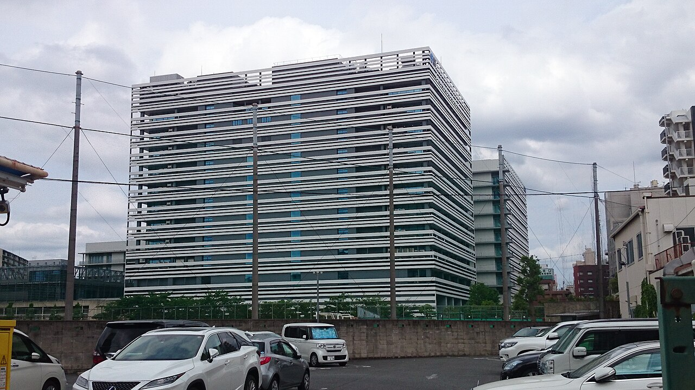
35企業・事業化制度この事例から学べること
NTT西日本が大阪で運営する共創拠点。相談役が人を紹介する日常の接点と、事業部の資産を使う選考型プログラムを重ねる。会員規模ではなく、誰が検証し、誰が採用を決めるかを比較する事例である。
11都市・地域の実証この事例から学べること
50haの産業地区と大学を一体化し、建物・設備・ロボットを共通のデジタル基盤で連携させる都市開発。Open Digital Platformは監視画面にとどまらず、異なる設備のデータを統合し、準備できたサービスをリフト、ゲート、ドアへ接続する。研究・試験・実運用を同じ地区でつなぐ発想だ。
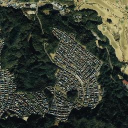
29都市・地域の実証この事例から学べること
高齢化する今泉台で、住民、大学、企業、市が暮らしの課題を共同で探る活動。代表例の家具開発は、若い世代にも暮らしやすい地域にしたいという問いを、自宅で仕事ができる環境へ絞ったもの。地域再生という目標と、家具が商品になった実績を分けて読む。
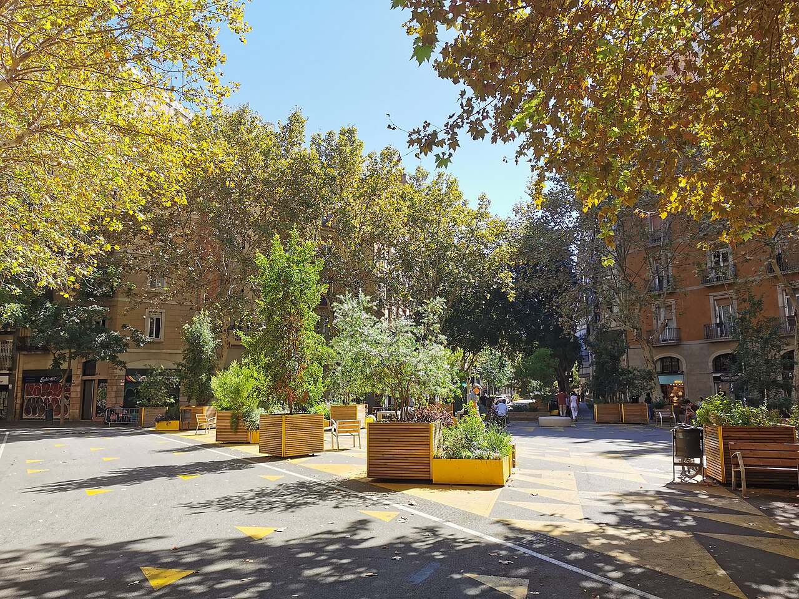
41都市・地域の実証この事例から学べること
自動車中心の道路を、歩行、滞在、遊び、近隣生活の場へ組み替える都市施策。ここではPoblenou、Sant Antoni、Hortaという介入内容が異なる三地区の実施・評価を中心に読む。市のイノベーション実証窓口Barcelona Urban Labとは別の対象である。理念の全面実施による将来便益と、実際に測定された局所的変化を分けることが学習の核心となる。
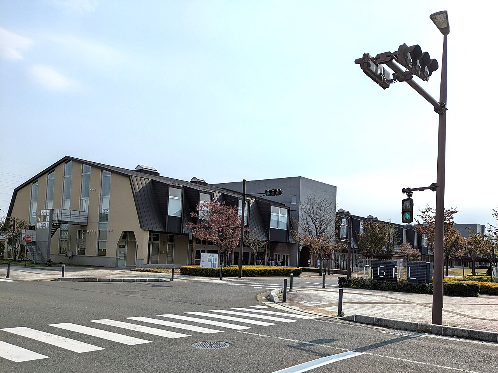
42都市・地域の実証この事例から学べること
紫波中央駅前の町有地を核とする官民複合地区。図書館だけ、商業施設だけの事例ではなく、土地貸付、公共床の取得、庁舎PFI、民間施設を街区ごとに組み合わせた都市整備として読む。学びは外観の模倣ではなく、公共需要と民間が引き受ける事業の境界を設計する点にある。
 19都市・地域の実証
19都市・地域の実証この事例から学べること
歴史建築を活用した試作拠点を核に、行政の実証窓口、ドローン飛行環境、港湾、量産移行の施設、人材育成をつなぐ地区。Brooklynと共通する専門家・設備モデルに、Detroitの製造基盤と都市実証制度が加わる。30エーカーの開発地区、Newlab単体、広域の実証ゾーンの成果を混同しないことが評価の前提になる。
 20都市・地域の実証
20都市・地域の実証この事例から学べること
旧海軍用地の一般開放区画を、研究者・企業・市民が行き交う都市実験の場に転換。水辺、屋上、道路、建物を使い、実際の利用と反応から改善する。移植すべきものは景観ではなく、現場を管理し実験を調整する機能と、地区の将来を決める公共の手続きである。運営者の交代も追った。
 04企業・事業化制度
04企業・事業化制度この事例から学べること
アート、科学、技術を横断する研究開発ラボ。技術が何をできるかだけでなく、それが人間や社会をどう変えるかを、体験できる作品・試作品にする。2026年9月に開いたHello Worlds!は来場者との対話を研究へ戻す公開の実験空間で、企業研究と市民の問いをつなぐ。
 01大学・研究機関
01大学・研究機関この事例から学べること
貧困などの課題を抱える人を設計の対等な担い手にする、MITの教育・研究・実践組織。地域のホストが事前に課題と参加者を整え、混成チームが現場で試作する。学ぶべきはワークショップの華やかさではなく、当事者の参加条件と、その後も自ら設計できる力を残す仕組みだ。
 02大学・研究機関
02大学・研究機関この事例から学べること
市と広域自治体の実際の課題を、複数大学の学生が20週間で調査・試作する拠点。課題提供組織には経営層への共有と組織内の合意形成、明確な対象者、少なくとも3回の参加と継続支援を求める。問いを学生に渡す入口から、成果を受け取る側の責任を組み込んでいる。公共課題の教育を実行に近づける設計だ。
 03都市・地域の実証
03都市・地域の実証この事例から学べること
ヘルシンキ市の非営利イノベーション会社。行政、企業、研究機関、住民を結び、実生活の場で短期実証を運営する。CommuniCityでは支援が届きにくい住民と課題を定義し、公開募集と共同開発へ進んだ。技術の展示会ではなく、市の課題形成能力を外部資金と現場に接続する機能が核となる。
 05産業・研究ネットワーク
05産業・研究ネットワークこの事例から学べること
CERNの科学者、学生、外部教育機関を結ぶ初期イノベーションの場。まだ答えが固まらない段階で、社会課題と先端技術の間を往復し、試作品を作る。施設の提供だけでなく、主催者の責任、安全手続き、成果報告まで明示され、探索の自由と運営の条件を両立させている。
 06大学・研究機関
06大学・研究機関この事例から学べること
2023年に創設した、東京藝大の全学横断プラットフォーム。ケア、デジタル、保存継承、教育、事業化まで芸術の役割を広げる。作品展示だけで終わらず、企業協賛の研究公募、科学大学とのマッチングファンド、都市を使った実証へと、異なる専門性を一緒に動かす経路を増やしている。
 08企業・事業化制度
08企業・事業化制度この事例から学べること
社員・インターン・顧客・パートナーが、職務の境界を越えて実験する企業内プログラム。世界各地の工房と全社Hackathonに加え、現在はInnovation Studioでアイデア登録、仲間探し、審査、イベント後の追跡を接続する。参加の熱量を継続する案件の情報へ変える設計が特徴。
 09企業・事業化制度
09企業・事業化制度この事例から学べること
旧貨物駅を転用し、多数の企業・投資家・支援者を集めた起業拠点。重要なのは建物の巨大さだけでなく、入門、経済的・社会的障壁のある創業者支援、成長志向、AI特化を別の入口に分けたこと。目的と成熟度が違う参加者を、同じ支援メニューに押し込めない。
 10産業・研究ネットワーク
10産業・研究ネットワークこの事例から学べること
デジタルツインの技術展示を、利用者のいる産業案件へ進める中立的支援拠点。ベルファストのセンターは2025年5月に開所した。設備だけを貸すのではなく、課題を持つ企業、技術企業、専門家を接続し、助成、段階レビュー、価格・市場の検討、実環境での検証を組み合わせる。
 12産業・研究ネットワーク
12産業・研究ネットワークこの事例から学べること
都市の形状と用途等の属性を機械で読める共通データとして整備・公開する国土交通省の取組。モデル、標準、OSS、ビューア、研修、補助を組み合わせ、各自治体が毎回ゼロから開発しない基盤を目指す。2026年の焦点は整備都市数の拡大に加え、更新費と日常業務への定着へ移っている。
 13産業・研究ネットワーク
13産業・研究ネットワークこの事例から学べること
大学・研究機関・企業が同居する移動と生産の研究キャンパス。ARENA2036-Xでは機械・部品のデジタル情報を表す管理シェルと、利用権限を保ちながら共有するデータスペースを組み合わせる。企業ごとの個別実証を、相互接続・共同開発・標準化へ進める中間の場として注目できる。
 14大学・研究機関
14大学・研究機関この事例から学べること
生命科学の実験をロボットで反復する共用基盤。特徴は、既存プロトコルを安定運用する「ロボット実験室」と、新技術を検証する「次世代自動化開発室」の組合せにある。2026年4月に本格稼働したが、学外利用の料金・契約はなお制度設計中。研究成果、施設稼働、誰でも利用できる状態を分けて読む必要がある。
 15企業・事業化制度
15企業・事業化制度この事例から学べること
造船所の再生空間に試作工房と専門家を置き、都市の課題を持つ企業・行政とスタートアップを結ぶ。価値は建築の格好よさだけではない。現場利用、許認可、評価設計、資金を案件単位でつなぐ仕組みにある。Brooklynの都市実証と、Detroitの製造集積・量産接続は、同じブランドでも別の機能として読む。
 16産業・研究ネットワーク
16産業・研究ネットワークこの事例から学べること
独立非営利のロボティクス拠点。スタートアップは小さな席から入り、共同設備とセンサー、ロボット、専門家、顧客との接点を利用しながら成長できる。常設の入居制度、2024〜2025年限定の助成付きアクセラレーター、2026年のPhysical AI Fellowshipは別制度であり、条件を混ぜないことが重要だ。
 17大学・研究機関
17大学・研究機関この事例から学べること
TU Delftのフィールドラボ。企業の作業課題を、現場の従業員、研究者、学生、試作技術者が一緒に検証する。短期の適用可能性確認から複数回の実験まで、期間と成果物を分けた支援を提供する。公式は「試作品を開発するが最終製品はつくらない」と明示しており、工場への実装責任を次の主体へ渡す設計が重要になる。
 18産業・研究ネットワーク
18産業・研究ネットワークこの事例から学べること
中小製造業が高額な設備購入に踏み切る前に、現場診断、事業性評価、シミュレーション、試作、見積依頼までを支援する。設置を義務づけず、ロボットで解かない判断も含める。強みはPoCそのものより、試験結果を部品表・ソフトウェア・調達条件へ変換し、外部のシステムインテグレーターにつなぐ仕組みにある。
 21都市・地域の実証
21都市・地域の実証この事例から学べること
海外企業にも市の施設・道路・データへの実証機会を開く制度。企業が部局ごとに説明と交渉を繰り返す負担を、市の調整担当が引き受ける。2026年も新規案件を採択しており、特徴は専用建物の規模より、庁内の実装担当者と実験者をつなぐ実務にある。庁内調整をサービス化している。
 22都市・地域の実証
22都市・地域の実証この事例から学べること
街路照明から発展し、IoT、AI、交通、環境の技術を実寸で試す屋外実証基盤。自治体が設備と継続運営を支え、運営者が企業・研究者と購入側をつなぐ。展示のにぎわい以上に、接続性、データ品質、保守まで含めて比較し、投資判断へ渡す仕組みに価値がある。
 23企業・事業化制度
23企業・事業化制度この事例から学べること
大企業がスタートアップの技術を購入し、自社の現場で検証するベンチャークライアント型。事業部の課題、購買手続き、技術検証、継続契約を一本につなぐ。起業家は株式と知財を保持し、BMWは自社への導入価値を確かめる。学ぶべき核心は、交流の場よりも「誰が何を買うか」を早く具体化する仕組みである。
 24企業・事業化制度
24企業・事業化制度この事例から学べること
顧客の急な困りごとに、スタートアップと事業部が共同で応える仕組み。CampXは業界への接続、実証の有償顧客、新事業づくりという異なる入口を用意する。専任のInnovation Managerが現場技術者と知財・法務・購買をつなぎ、短期の価値検証からサービス販売へ進める。
 写真：館内・開設準備期
写真：館内・開設準備期この事例から学べること
家電メーカーが、趣味や暮らしの困りごとを持つコミュニティと初期段階から製品をつくる。公開試作、少量生産、クラウドファンディング、販売、親会社の量産網をつなぎ、需要が育つ前の大型投資を抑える。共創への参加と知財・報酬の条件も、モデルを理解するうえで欠かせない。
 26産業・研究ネットワーク
26産業・研究ネットワークこの事例から学べること
大学の研究と企業の生産現場をつなぐ英国の応用研究ネットワーク。共有設備の提供に加え、工程設計、供給網、人材育成を組み合わせて製造可能性を高める。企業が新設備へ投資する前に、専門チームと試せる機能が重要だ。最新戦略は技術だけでなく将来必要となる人材・技能も対象に置く。
 27産業・研究ネットワーク
27産業・研究ネットワークこの事例から学べること
応用研究を産業へ渡す複数の出口を持つ研究機構。企業からの受託収入、公的な競争的資金、基盤資金を組み合わせ、研究の先に契約・知財利用・起業を置く。AHEADはそのうち事業化を育てる仕組みで、顧客課題、チーム、必要な知財を段階的に確かめる。技術の出口と引受先を同時に設計する。
 28産業・研究ネットワーク
28産業・研究ネットワークこの事例から学べること
企業、大学、公的機関が、単独では投資しにくい製造技術と人材を共同で育てる全米ネットワーク。分野別の研究所が会員を組織し、研究開発、試験設備、教育を結びつける。参加者の多さより、共通成果が複数の企業や工場に使われるかが価値を左右する。国の制度と各研究所の実務を分けて読む必要がある。
 30産業・研究ネットワーク
30産業・研究ネットワークこの事例から学べること
横浜のリビングラボ全体を単一施設とみなさず、地区ごとの活動と、それらを支援する民間法人・市の関係として読む。サポートオフィスは市民活動が事業として続く際の障壁を、専門家や事業者との接続で支援する。地域で実物やサービスが動いた成果は、その地区の実施主体にも帰属する。
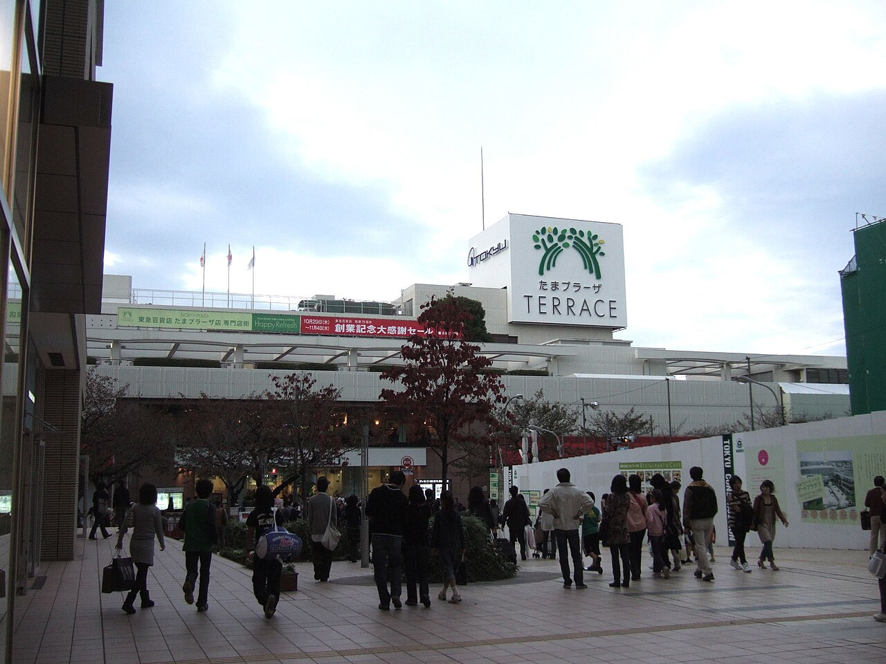
31企業・事業化制度この事例から学べること
東急と横浜市の次世代郊外まちづくりで整備された拠点。エネルギー、住まい、地域活動の機能を3棟に配置し、地域が自ら企画する活動を受け入れた。共創スペースの貸出は2025年3月末に終了しており、過去の利用条件を現在の参加方法として案内できない。
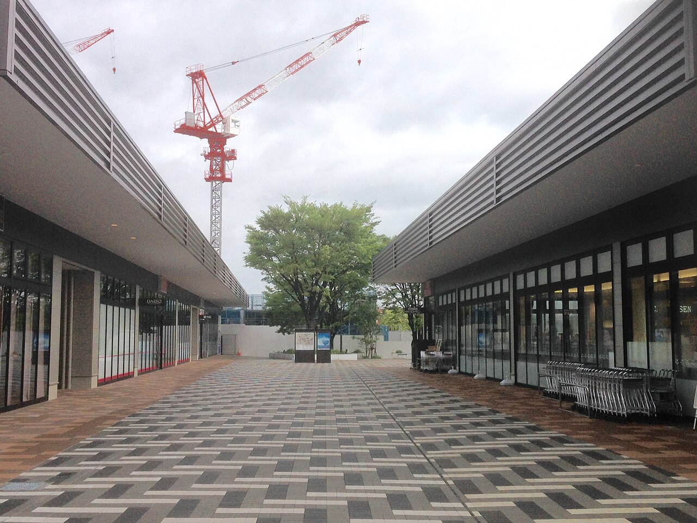
32企業・事業化制度この事例から学べること
相鉄いずみ野線の南万騎が原駅前にある、地域の人がまちの楽しみ方を考え、試すための拠点。駅前の住宅や広場の再整備と関係するが、ラボの活動と不動産開発全体は同じ事業単位ではない。横浜全市のリビングラボ支援ネットワークとも別の場所・運営として扱う。
 33産業・研究ネットワーク
33産業・研究ネットワークこの事例から学べること
大牟田未来共創センター（ポニポニ）が運営する地域共創活動。地域の人を既成製品のモニターだけにせず、何が生活上の問題なのかを企業と一緒に問い直す。企業にフィールドを貸すサービスとは区別し、地域に価値があるテーマを選ぶという方針を明示する。
 34企業・事業化制度
34企業・事業化制度この事例から学べること
NECソリューションイノベータが白浜の生活現場で研究・新事業の仮説を確かめる活動。調査施設そのものではなく、地域との継続的な関係を通じて住民や事業者に会い、小さな試行を重ねる。新事業の成功を宣言する事例ではなく、検証の速さと結果の限界を読む対象である。
 36企業・事業化制度
36企業・事業化制度この事例から学べること
トヨタ自動車株式会社がつくり、株式会社Serendipityが運営する、福岡・天神のリビングラボ。会員25,000人・累計来場者数9万人の接点を積み重ね、挑戦する人、課題の当事者、技術・アセットを持つ人をつなぐ。「出会い・共感・挑戦・発信」を循環させ、社会課題の発掘から小さな実践、社会実装へ進める。
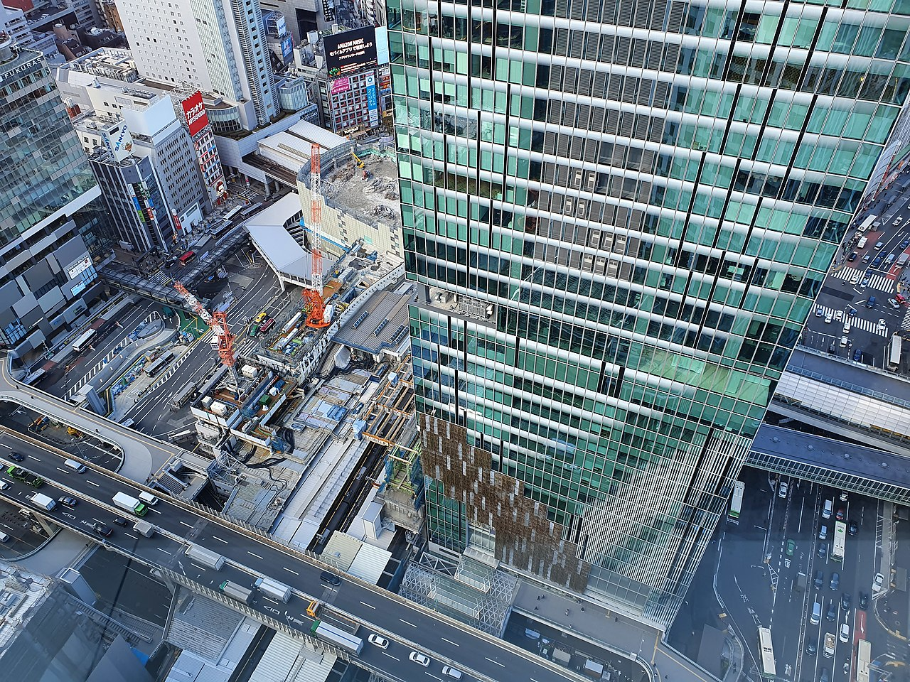
37企業・事業化制度この事例から学べること
渋谷スクランブルスクエア15階の会員制共創施設。自発的な問いを持つチームを公募で受け入れ、一定期間の活動場所と対話・試作・発表の機会を重ねる。完成した事業計画だけを支援する場とは異なり、問いを磨く過程が主な学習対象となる。
 38企業・事業化制度
38企業・事業化制度この事例から学べること
若い世代の実験を支える渋谷の拠点。GARAGE Programで場所・助言・発表機会を提供するだけでなく、2022年にメンバーを主な構成員とする法人を設け、運営体制を移行した。試作を見せる段階と、現場に導入して継続利用を得る段階を区別して学べる。
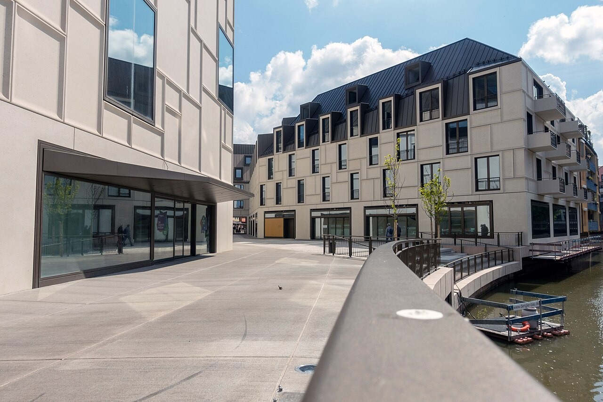
39企業・事業化制度この事例から学べること
買い物や観光で訪れる人も新製品・サービスに触れ、意見を返せる公開型のテスト拠点。研究機関の一般公開とは異なり、依頼者の開発課題を体験可能なTest Spaceに翻訳し、専門スタッフが反応を解釈して開発判断へ戻す。Fraunhofer全体とは別単位の独立会社として比較する。
 40都市・地域の実証
40都市・地域の実証この事例から学べること
旧造船所で、廃用のハウスボートを陸上の仕事場に転用した循環型の実験・文化拠点。建築家、技術者、事業者と将来の入居者が空間をつくり、仕事、飲食、文化活動を重ねてきた。2026年の運営者資料は、現地利用の期限を2027年1月31日とする。継続している拠点を既に終了扱いしない一方、恒久運営が保証された成功例とも扱わない。
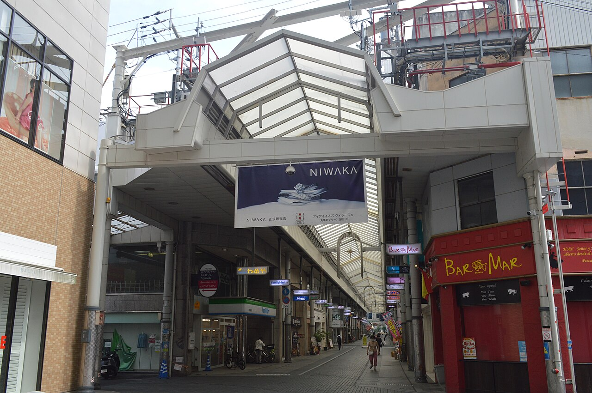
43都市・地域の実証この事例から学べること
丸亀町の再開発は、土地を全面買収するのではなく地権者の所有を保ち、長期の定期借地を通じて商業・住宅・コミュニティ機能を組み直す事例である。A街区の契約条件を商店街全域へ無条件に一般化せず、高松の中心市街地活性化計画とも別の対象として扱う。
 44都市・地域の実証
44都市・地域の実証この事例から学べること
油津では店舗誘致の責任者を置き、商店だけでなくIT企業や保育等を含む新しい用途を既存商店街へ導入した。注目すべきは個人のカリスマより、市の事業、まちづくり会社、所有者、出店者という実装の分担である。開業数を地域人口や全事業の継続利益と同一視しない。
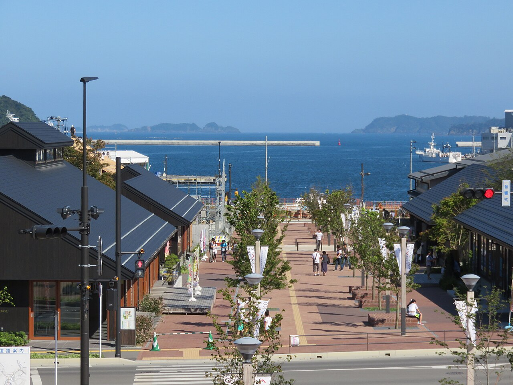
45都市・地域の実証この事例から学べること
女川の復興とレンガみちは同じ駅前地区の記事に統合する。住宅を安全な高台へ移し、駅周辺に公共・商業・交流を集めた都市構造が背景にある。レンガの舗装やイベントだけを独立した成功要因とせず、災害復旧財源、町の施設、民間テナント、日常管理の境界を読む。
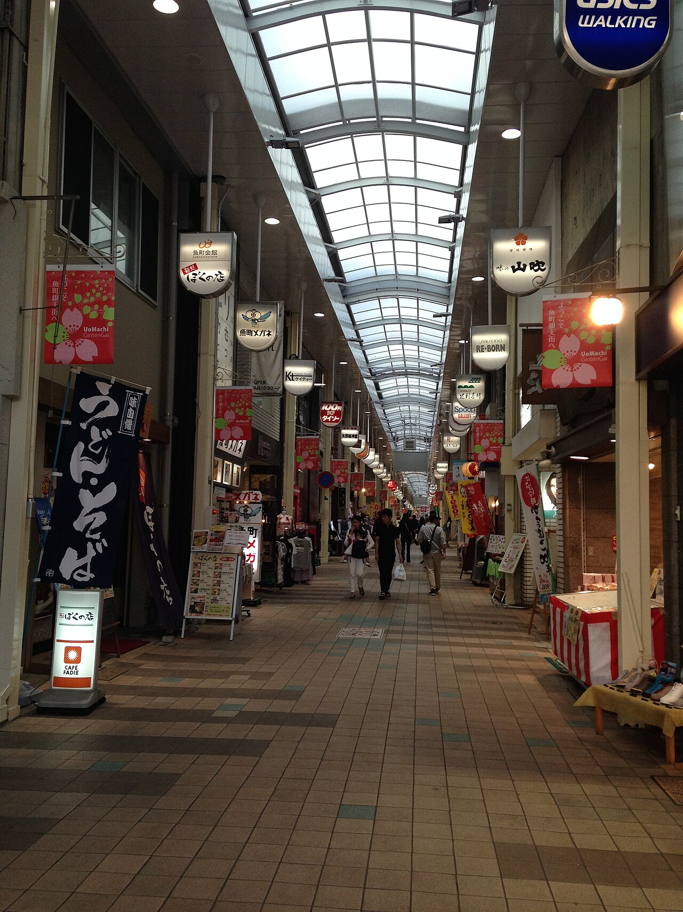
46都市・地域の実証この事例から学べること
小倉魚町を起点とする既存不動産活用。スクールの修了や美しい改修案ではなく、所有者の判断、資金回収、運営者をつないで実事業へ移す点を比較する。初回の設計偏重を修正した記録があり、成功だけでなく学習過程を読める。
 写真：当該事例の住民参加活動
写真：当該事例の住民参加活動この事例から学べること
高齢者住宅と医療、ケア、食、広場を組み合わせた公共複合施設。駅の便利さを背景としつつ、比較の主題は乗換能力ではなく、住民が日常の生活機会に近づける配置と運営である。異なる省庁が別々の敷地を求める前に共同計画を始め、開業後にも協議体を残す点に特徴がある。
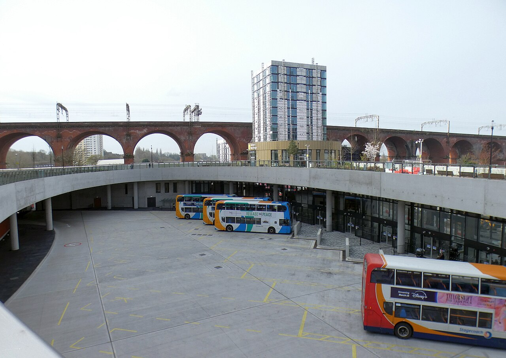
48都市・地域の実証この事例から学べること
旧バスターミナルを、バス交通、屋上公園、住宅と商業空間、駅への歩行・自転車動線を含む複合開発に更新した事例。学ぶ対象は大規模建築そのものではなく、交通の乗換と地域で過ごす時間を同じ計画に取り込んだこと。市中心部全体の再生投資とは範囲を分ける。
 49都市・地域の実証
49都市・地域の実証この事例から学べること
Wester Hailes Community Trustが地域計画を背景に設けたコミュニティ拠点。交通端末を並べた大規模施設ではなく、自転車・工具の貸出と地域活動を接続する小さな場所である。会員がアイデアと投票を通じて組織を方向づける点を、単なる利用者アンケートとは分けて学べる。
 50都市・地域の実証
50都市・地域の実証この事例から学べること
公道上に目立ち、近づきやすいカーシェア拠点を市が計画・実装するネットワーク。単なる駐車場のブランドではなく、民間サービスの利用可能性を公的な道路空間政策と接続する事例である。市内カーシェア全体の効果と、その一部分であるmobil.punktの固有効果を分けて読む必要がある。
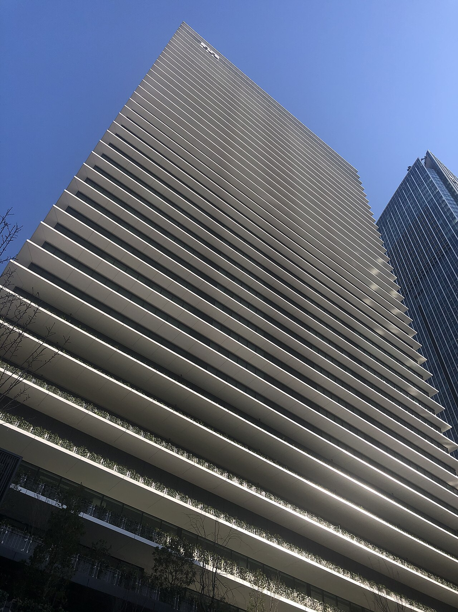
51企業・事業化制度この事例から学べること
虎ノ門のスタートアップ向けワークスペースとコミュニティ。施設の提供に加えて、CIC Instituteが東京都の実装支援で技術側と導入先を結ぶ。生活の木へのリユース梱包導入は、この支援事業と採用企業の実行を追える例であり、同じ建物に集まっただけの成果とは扱わない。
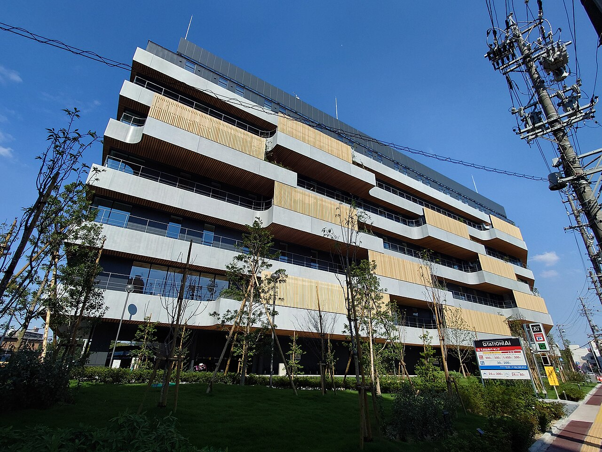
52企業・事業化制度この事例から学べること
愛知県の戦略に位置づく名古屋・鶴舞の支援拠点。民間運営、県による利用負担軽減、企業会員、相談や選考型支援を重ねる。施設の建設・運営にもスタートアップの製品を採り入れる一方、共創の検討件数と導入件数を明確に区別する必要がある。
 53企業・事業化制度
53企業・事業化制度この事例から学べること
柏の葉の事業者・起業家が働き、相談し、交流する拠点。街の実証環境との接点を持つが、地区全体と施設内の能力は別である。特に2025年以降、工房の人員・機器サービスが変更されており、開業時の設備一覧を現在の支援能力として再利用してはいけない。
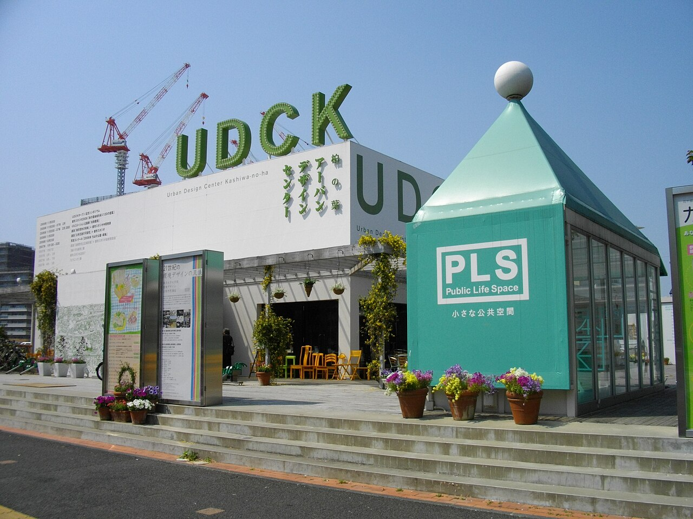
54都市・地域の実証この事例から学べること
2020年12月に始まった柏の葉の市民共創プログラム。生活者、企業、行政、学術機関が、新しい製品・サービスや地域プロジェクトを考える。柏の葉スマートシティ全体やUDCKそのものと同一視せず、生活者との対話を設計へつなぐ一つの仕組みとして扱う。
 55都市・地域の実証
55都市・地域の実証この事例から学べること
健康意識の高い会員と企業をつなぎ、意見交換・モニター調査・専門機関との調整を行う官民連携団体。市民の健康増進と企業の製品開発を同時に目指すが、研究に参加できる仕組みと健康効果が証明されたことは分けて読む。2021年に解散したのは別の推進協議会であり、機能はラボへ集約された。
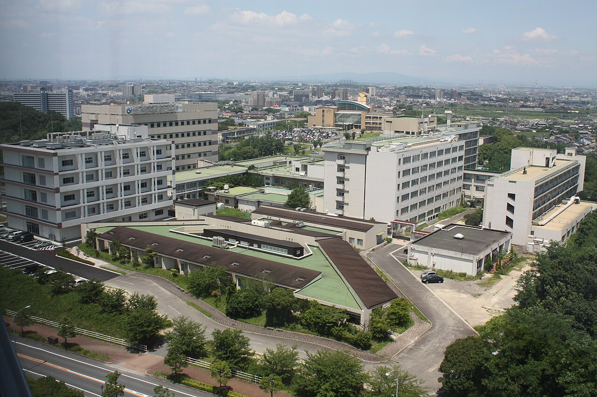
56産業・研究ネットワークこの事例から学べること
健康長寿支援ロボットセンターの臨床評価研究を中心に、介護・生活支援機器を評価する拠点。生活を再現する部屋や計測技術に、医療・介護・工学の専門知を組み合わせる。製品展示だけでなく開発相談と実証の取次を行う一方、機器が置かれていることを医療効果の証明とは扱わない。
 57都市・地域の実証
57都市・地域の実証この事例から学べること
熱を蓄える舗装中心の校庭を、緑、日陰、水、透水性のある土と多様な遊びの場へ転換する市の施策。設備の導入だけでなく、子どもや教職員が使い方を考える共同設計、地域への開放、改修後の教育実践を組み合わせる。全市施策と、欧州助成を受けた十校庭の先行プロジェクトの評価範囲を区別する。
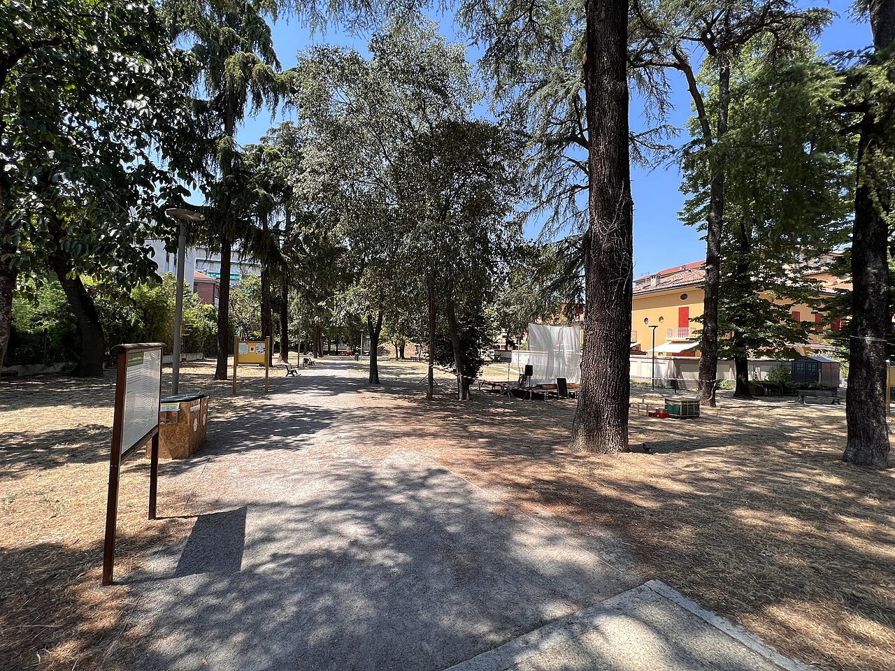
58都市・地域の実証この事例から学べること
広場や緑地、学校空間だけでなく、教育やデジタルを含む共通の資源を市民と市が扱う制度。参加イベントを増やすだけでなく、介入内容と実施方法を協定にする点が比較対象となる。2014年の規則で知られるが、現行の説明には2023年施行の新規則への移行を反映する。個々の学校広場や地域の家を独立した成果として二重に数えず、制度単位で読む。
 59都市・地域の実証
59都市・地域の実証この事例から学べること
道路空間を地域の広場へ転換し、公共空間として維持する市の仕組み。仮設材料で始め、恒久整備へ進む過程と、地域パートナーによる日常運営を接続する。運営資源の少ない地域にはPublic Space Equity Programが保守・園芸・活動・事務等の支援を提供する。広場の件数だけではなく、支援なしでは続かない地域の運営能力をどう補うかが重要な比較点である。
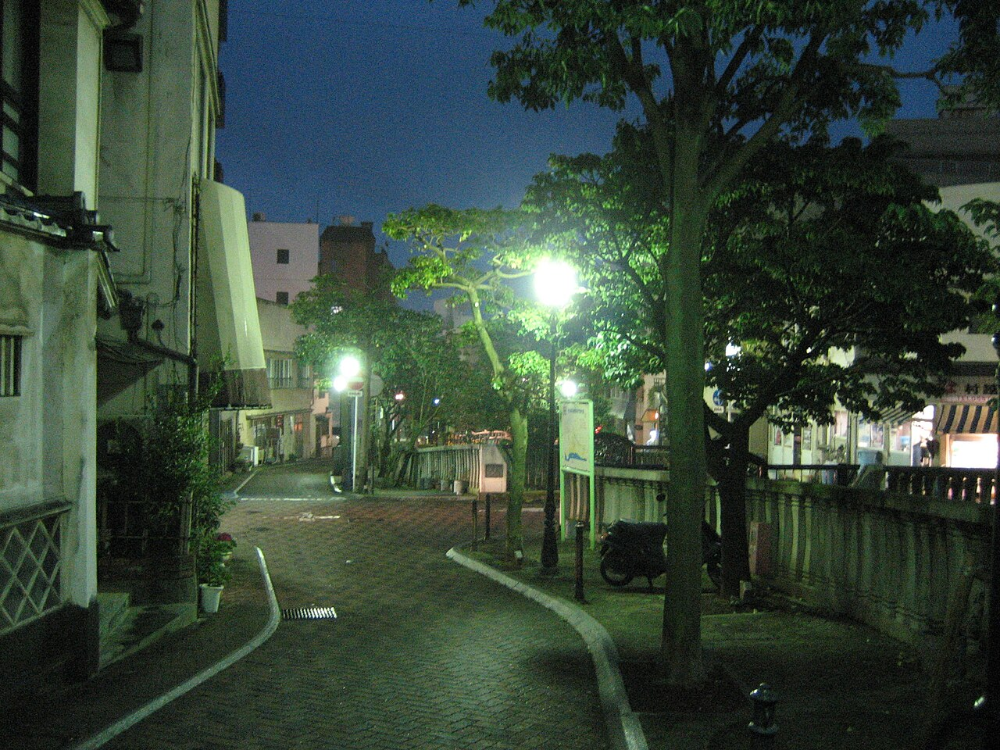
60都市・地域の実証この事例から学べること
熱海銀座を核とするまちなか再生では、空き物件を新しい営業や交流の場所へ変える民間実践と、市の創業支援・人材接続が重なる。学ぶ対象は熱海観光全体の回復ではなく、既存物件を使う担い手が生まれ、地区の営業に接続する過程である。
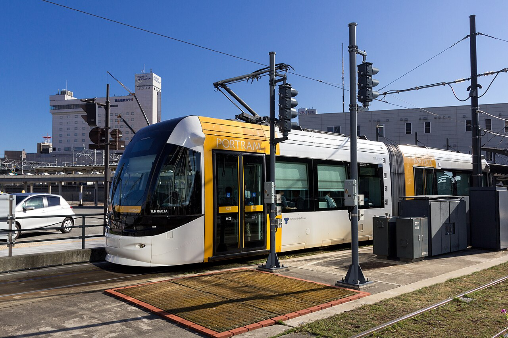
61都市・地域の実証この事例から学べること
旧JR富山港線を2006年にLRTへ転換し、その後市内線と接続した交通再編。低床車両の象徴性だけでなく、施設を支える公共と運行する事業者の分担、頻度・乗継・目的地を一体にしたサービスとして読む。路線の効果とコンパクトシティ政策全体の効果は同じではない。
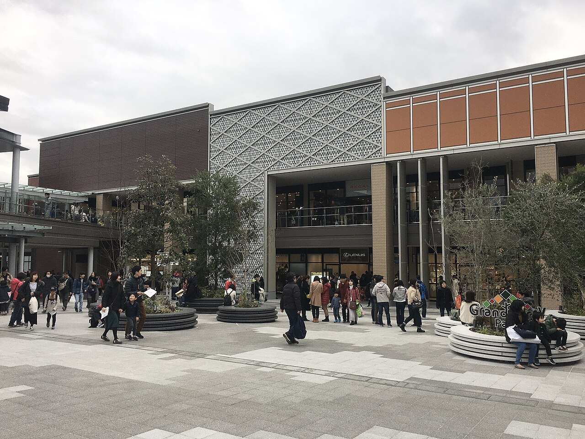
62都市・地域の実証この事例から学べること
南町田は商業施設名だけではなく、駅、鶴間公園、パークライフ・サイトを含む地区再編である。町田市と東急が都市基盤・商業・公園を一体に計画した一方、開業後の管理主体は同一ではない。無料の公園利用と商業収益、地域の日常生活を共存させる運用が学習対象となる。
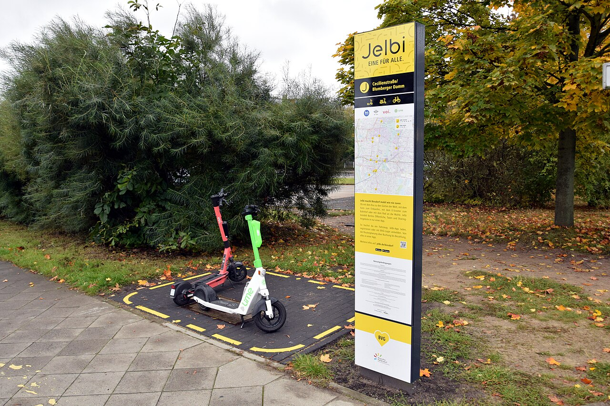
63都市・地域の実証この事例から学べること
BVGが公共交通と複数の共有交通サービスを結ぶアプリ・物理拠点の体系。学ぶべきは予約画面だけではなく、車両の返却場所や歩道上の秩序を運営の対象に含める点である。拠点、アプリで予約可能な車両、利用回数は異なる集計単位であり、混ぜて普及率や環境効果にしない。
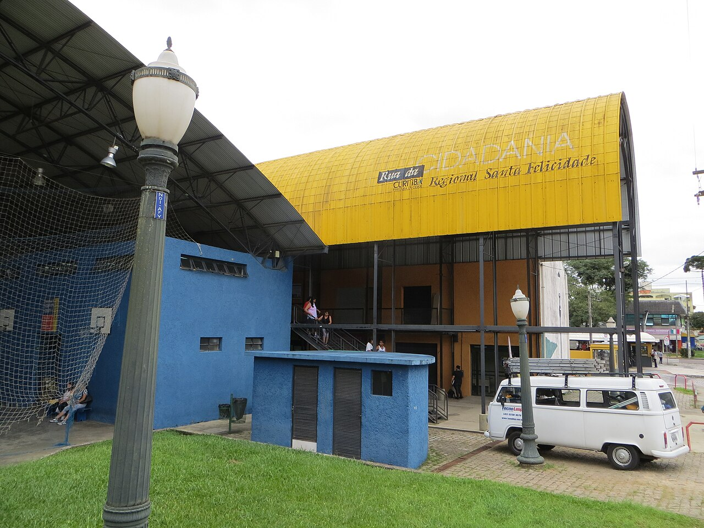
64都市・地域の実証この事例から学べること
市の地域行政・生活サービスを地区拠点へ分散させるRuas da Cidadania。Santa Felicidadeのようにバスターミナルに隣接する拠点もあり、交通と窓口サービスを組み合わせて読める。市内のすべての拠点が同じ施設構成ではなく、BRT全体の都市構造政策とは対象を分ける。
 65都市・地域の実証
65都市・地域の実証この事例から学べること
Ciudad Bolívarのケーブル交通と、Manitas周辺の行政窓口・ケア拠点を組み合わせて捉える地区事例。単一の交通建築ではなく、交通、手続、ケアを受ける人と担う人の機会を接続する公共サービスの集積である。ケーブル全線の乗客数をManitasの利用者数として扱わない。
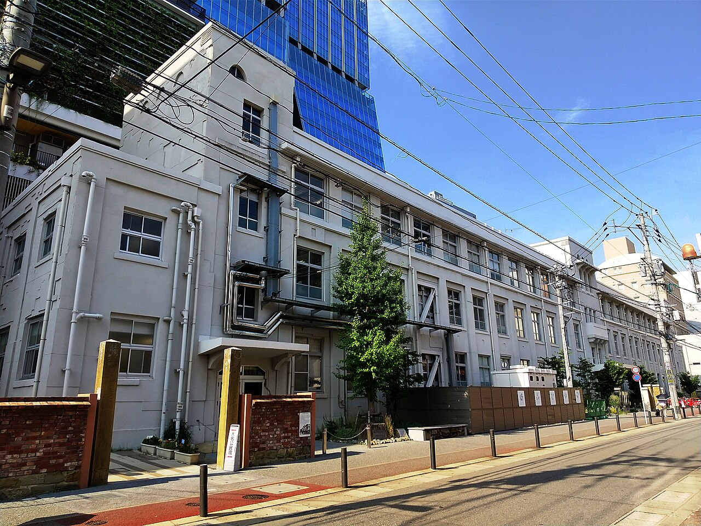
66都市・地域の実証この事例から学べること
旧大名小学校を活用した福岡市のスタートアップ支援施設。相談や入居の入口と、成長企業を選抜して経営課題へ伴走する支援を重ねる。施設の入居者だけでなく市内企業を対象とする事業もあるため、支援企業の成果を建物の入居効果として一括計上しない。
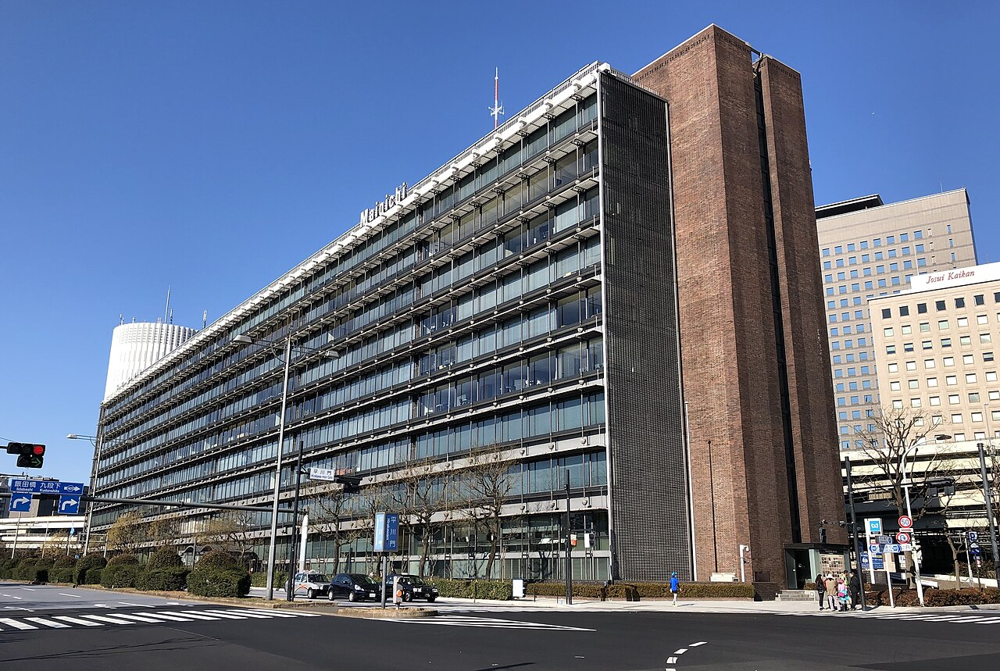
67企業・事業化制度この事例から学べること
PYNTは日建設計の社内外をつなぐ活動基盤である。誰でも同じ条件で使う貸し会議室ではなく、社員紹介によるゲスト利用・会員登録と、選考を伴う助成プログラムを持つ。施設の利用者数よりも、課題を持つ人と設計・制度を扱う専門家が継続して作業できる条件に学びがある。
 写真：施設内の作業風景（2016年）
写真：施設内の作業風景（2016年）この事例から学べること
Impact HUB Tokyoは仕事場と関係形成を組み合わせる民間拠点である。施設の規模や世界の拠点数より、コミュニティビルダーが相手の目的を問い直し、紹介と日常の交流を続ける役割が重要となる。東京の運営者が説明する支援と、世界のネットワーク全体の活動は区別して読む必要がある。
 69企業・事業化制度
69企業・事業化制度この事例から学べること
2019年に日立中央研究所内へ開設した研究開発拠点。研究者とデザイナーが顧客やパートナーと社会課題や事業仮説を検討し、試作・実証へ進める場である。生活者が自由に運営する地域ラボではなく、企業の研究開発と事業化に結び付いた協創拠点として区別する。
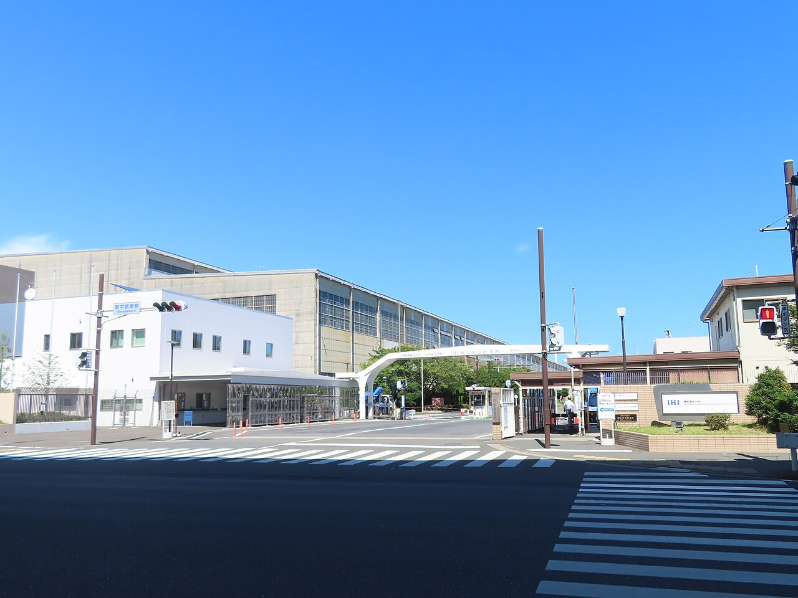
70企業・事業化制度この事例から学べること
IHIの横浜事業所に2019年開設した研究実験棟と、その2階にある顧客共創機能i-Baseを対象にする。共創エリア、試作するガレージ、共同で執務するプロジェクトブースを組み合わせる。一般市民参加型の地域ラボではなく、企業顧客の課題を技術開発へ変える拠点である。
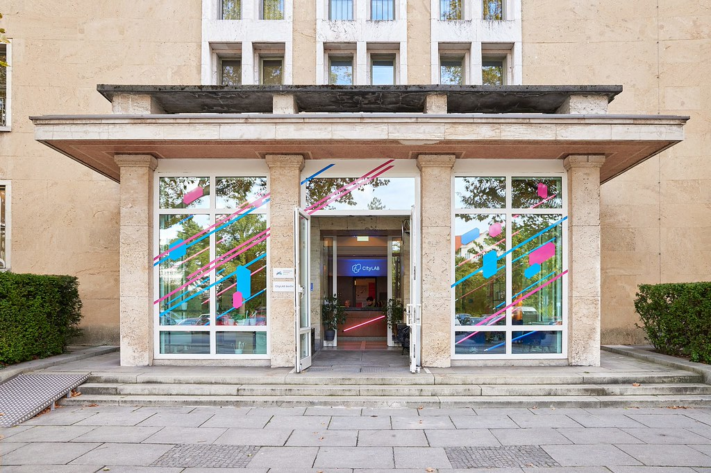
71都市・地域の実証この事例から学べること
Technologiestiftung Berlinが運営し、ベルリン州首相府が資金を支える公共イノベーションラボ。技術・設計・研究を組み合わせ、行政職員や利用者とデジタルサービスを試す。常設展示に加え移動型Kiezlaborで地区へ出向くが、参加イベントと本番サービスへの引渡しは別に追う。Fairgnügenがberlin.deへ長期統合された2025年の記録は、その区別を学ぶ具体例となる。
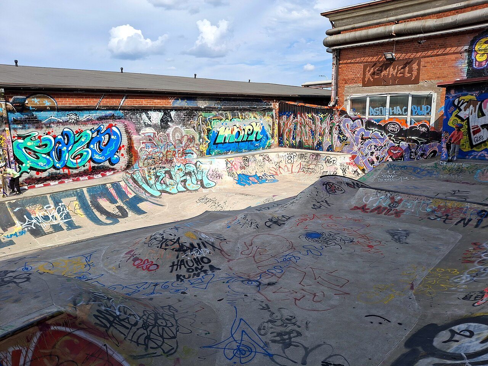
72都市・地域の実証この事例から学べること
旧工業地を住宅・サービス・文化の地区へ転換するタンペレの都市再生。循環型の実験と文化活動が先行した場所で、市と市所有の開発会社が長期整備を進める。実験ができることと、上下水道等の本格的なインフラへ採用されることは同じではない。2026年にもCentre Iの詳細計画案が公開されており、地区全体が完成した循環都市としては扱わない。
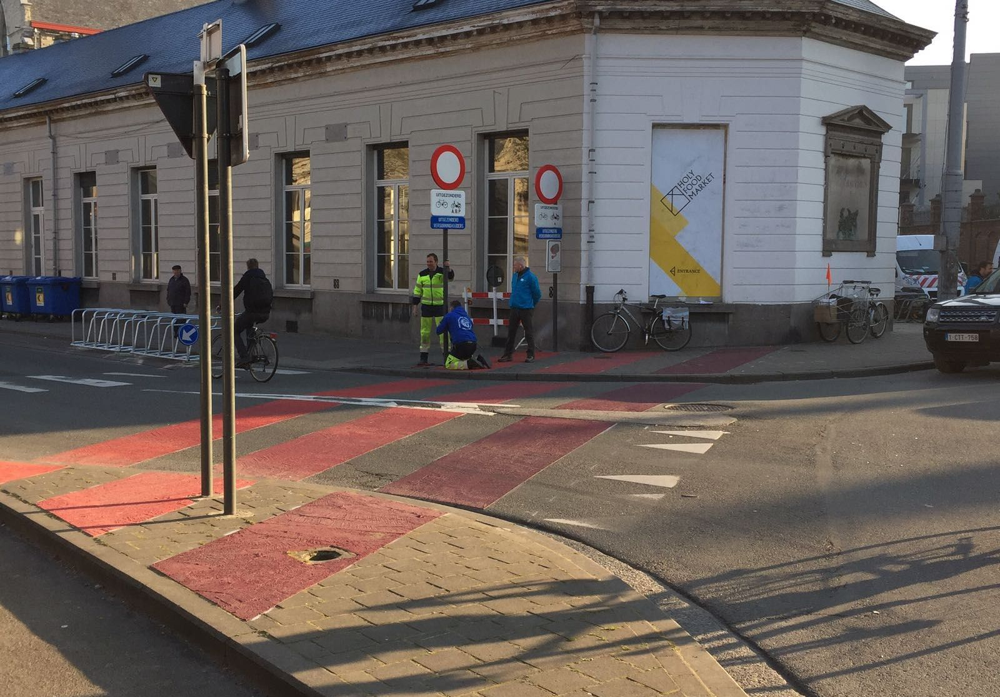
73都市・地域の実証この事例から学べること
中心部を六つのセクターに分け、自動車でセクター間を移動する時は環状道路を使う交通再編。中心部へのアクセスを全面禁止するのではなく、通過する車と目的地へ向かう車を分ける仕組みである。数年の準備の後、2017年に短期間で通行方向や標識を切り替えた。その後の二段階評価が、歩行・自転車・公共交通の利用と、局所的な問題の両方を確認している。
 74都市・地域の実証
74都市・地域の実証この事例から学べること
松山市駅と城山公園を結ぶ花園町通りは、車道の余地を歩行・自転車・滞在へ再配分した250mの街路である。車線削減が目的なのではなく、交通機能を保ちながら衰えた歩行と商業の接点をつくり直す取り組みとして読む。市、商店街、専門家の検討と整備後の使い方を分けずに扱う。
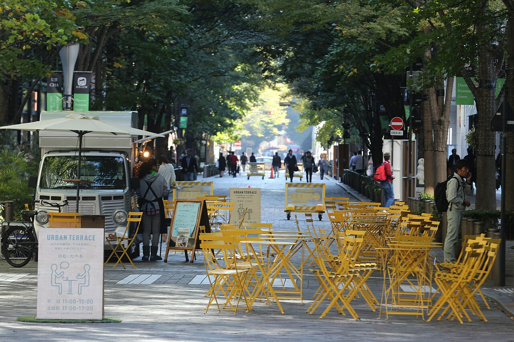
75都市・地域の実証この事例から学べること
丸の内仲通りでは交通規制時間帯にテーブル・椅子やキッチンカーを配置するアーバンテラスと、期間限定の社会実験が重なる。永久歩行者専用化が完了した地区ではない。道路の権限を持つ行政・警察、占用を調整するエリア団体、催事を実施する主催者の分業を読む。
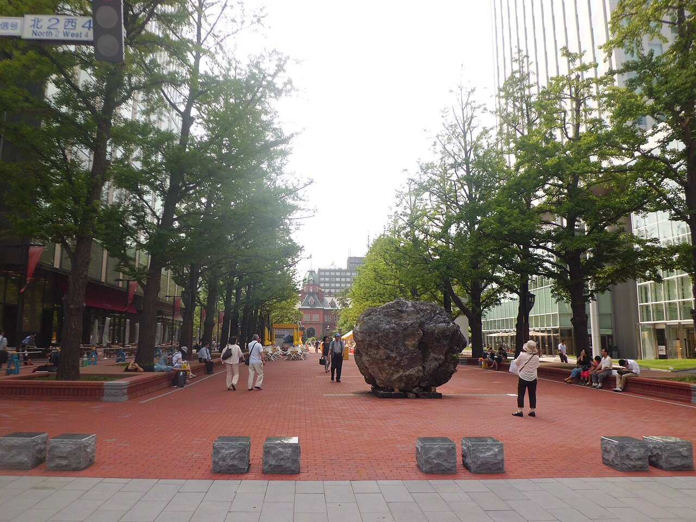
76都市・地域の実証この事例から学べること
アカプラは札幌駅前通と道庁側を結ぶ北3条通の一部を広場化した公共空間。周辺再開発の事業者が公共貢献として整備し、札幌駅前通まちづくりが指定管理する。商業催事が多いことと独立採算は同じではなく、公共管理と自主企画の収支・責任を公開評価で確かめられる点が重要だ。
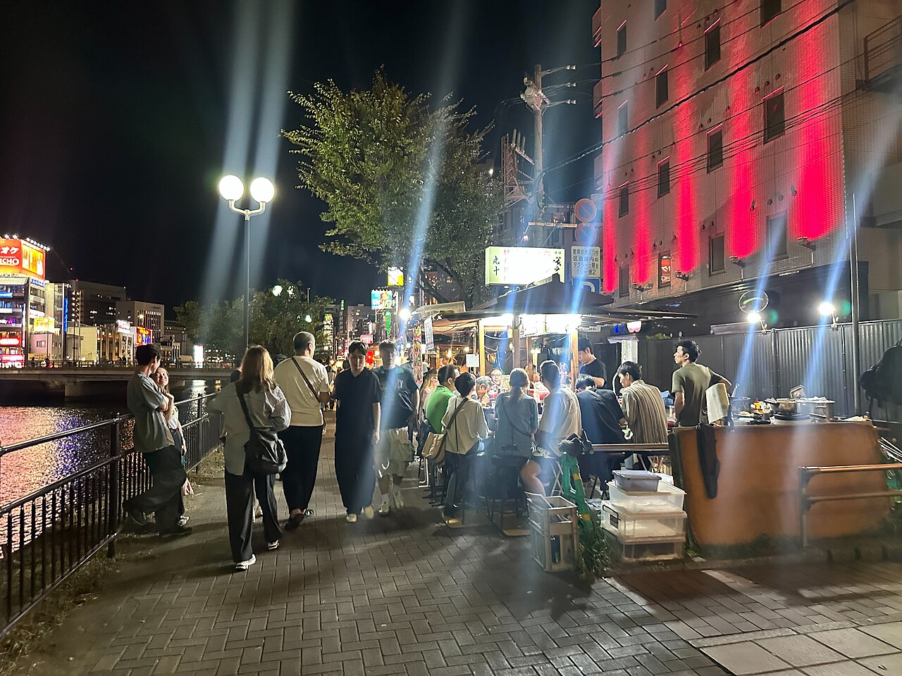
77都市・地域の実証この事例から学べること
福岡の屋台は道路や公園で小さな飲食事業を続ける制度と日常運営の事例。観光写真の雰囲気だけではなく、公募、複数の許可、時間制限、器材の保管・運搬、地域との共生を含む事業として読む。対象は市の運営制度と代表的な営業実態で、全屋台を一社の事業とは扱わない。
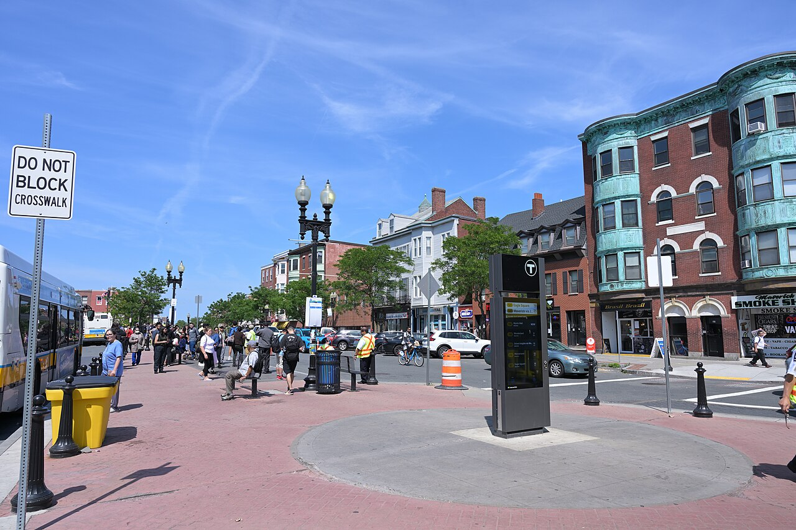
78都市・地域の実証この事例から学べること
共有交通の乗降・貸出にベンチや植栽などを組み合わせる近隣拠点プログラム。2021年のEast Boston実証と、後続の拡大調達を区別して学ぶ。都市全体に同じセットを置くのではなく、既存交通や近隣サービス、住民の希望に応じて構成を変える考え方が中心である。
 79企業・事業化制度
79企業・事業化制度この事例から学べること
商業施設Nordstanの中に、配送、自転車等の修理、電動モペッドの電池交換、職人向け小型倉庫と共用空間を組み合わせた業務・物流拠点。宿泊施設ではなく、都心で働く人や事業者の移動を支える場所である。EU研究事業の終了と施設サービスの継続を明確に分ける。
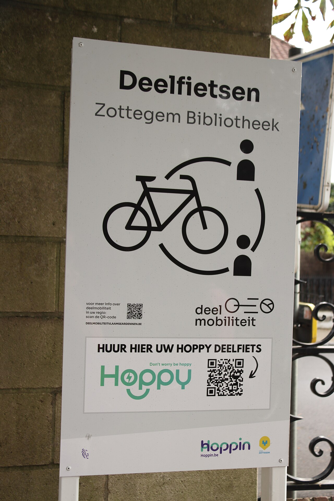
80都市・地域の実証この事例から学べること
Hoppinは複数交通を組み合わせる地域の政策体系であり、ここでは物理的なHoppinpuntenを比較対象とする。共通の見た目だけでなく、最低限の設備、アクセシビリティ、サービス情報の報告を条件としている。予定拠点数を完成数とみなさず、既存拠点の経過措置も含めて読む。
 81都市・地域の実証
81都市・地域の実証この事例から学べること
GroningenとDrentheの既存公共交通網を基礎に、乗換環境と地域の生活機能を接続する拠点ネットワーク。すべての拠点に商店や医療を新設した事業ではない。共通の案内を持ちつつ、個々の地域の条件に応じて施設を組み合わせ、交通の待ち時間や乗換の負担を扱う。
 写真：当該ネットワークの実拠点
写真：当該ネットワークの実拠点この事例から学べること
公共交通と共有移動を接続する市のネットワーク。2019年の試行だけの事例ではなく、市の進捗ページは2020〜2025年の拠点拡大を報告する。初期実証で得た知見を、交通の公平性と場所ごとの条件を考慮する配置へつなぐ。一方、広域交通当局の後続拠点計画やアプリ構想は別段階である。
 83都市・地域の実証
83都市・地域の実証この事例から学べること
NETSUGENは県庁内に置かれた官民共創スペースである。県職員、事業相談を担うコーディネーター、交流を支えるコミュニティマネジャー、イベント運営者が異なる役割を担う。庁舎にあること自体を調達への近道と捉えるのではなく、誰に何を相談できるかと、どこから会員向けの支援になるかを読む事例である。
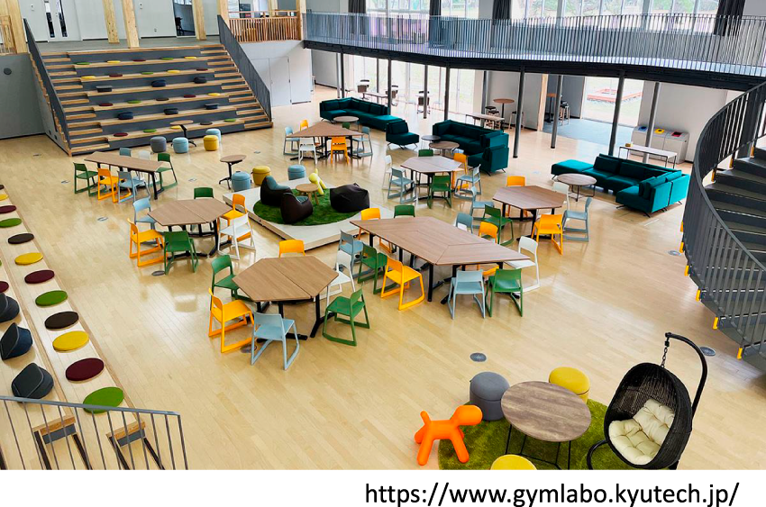
84大学・研究機関この事例から学べること
GYMLABOは学生を起点として、企業や学外の人が交わる九州工業大学内の施設である。共同研究契約そのものより、その前段にある会話と学びの機会が確認できる。学内外の利用条件、イベント主催者の責任、交流後の正式な連携手続きは別々に見る必要がある。
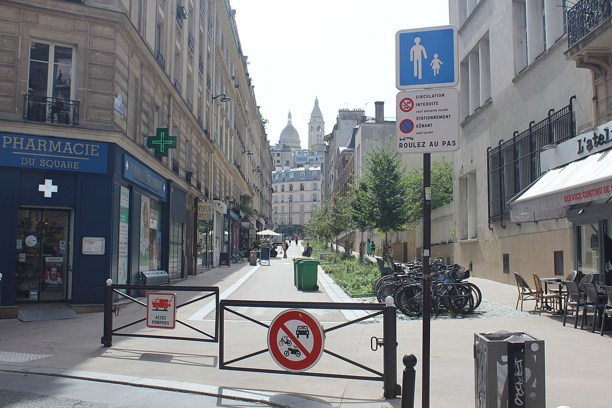
85都市・地域の実証この事例から学べること
学校周辺の道路を歩行者優先に変え、通学、安全、遊び、地域の滞在に使う施策。Rues aux écolesからRues aux enfantsという表現へ広がっている。校庭内を改修するOasisとは対象、決裁、維持条件が異なるため別の事例とする。一律に道路を完全閉鎖するのではなく、配送や沿道駐車場への必要なアクセスを残す場所もある。実施数の数え方と整備の質を分ける必要がある。
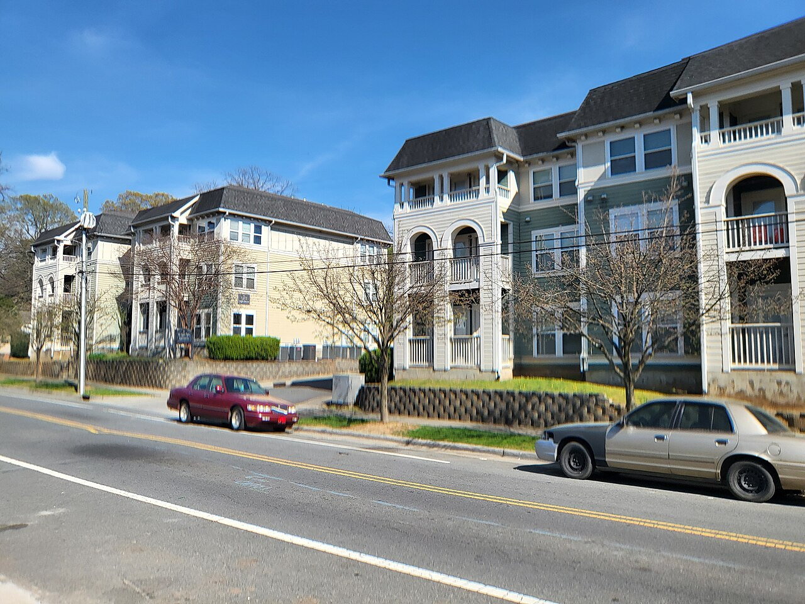
86都市・地域の実証この事例から学べること
市有の建物を非営利Envision Charlotteが運営し、資材の再利用、教育、企業との協働を行う拠点。展示だけでなく地域のガラス回収・加工や、事業運営者を育てる仕組みも持つ。市の不動産支援、拠点の教育活動、個別の回収サービスは別の価値連鎖であり、運営法人の過去の省エネ実績をこの拠点の成果へ足さない。
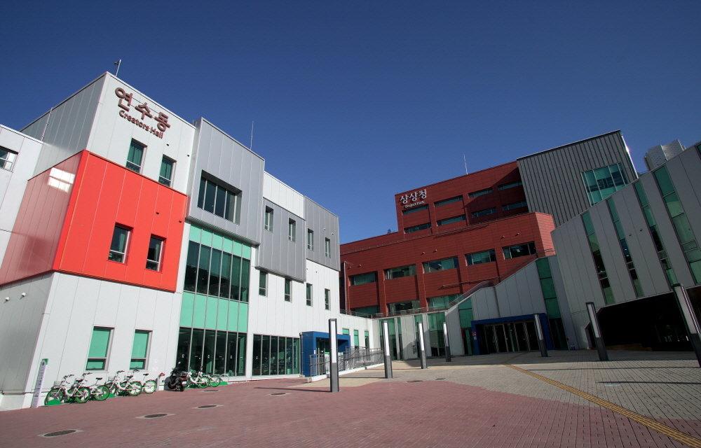
87都市・地域の実証この事例から学べること
旧疾病管理機関の建物を社会イノベーションの拠点へ転用し、2015年に開いた施設。ソウル市の過去の紹介は中間支援組織、若者の活動、ものづくり空間等の集積を説明する。しかし同じ施設・体制が現在も続くわけではない。地域アーカイブは2023年12月の多数の団体の退去と公式運営の停止を記録し、市議会の2026年度予算案検討資料も旧拠点の後処理完了を記す。稼働中の成功例ではなく、終了と継承を考える比較例として扱う。
キーワードを短くするか、絞り込みを解除してください。
FIRST THINGS FIRST / はじめての共創
リビングラボ、まちづくり、オープンイノベーション。違いと関係を知り、自分の課題に合う進め方を選ぶ。
INPUT → FUNCTION → OUTPUT → OUTCOME
誰の課題に、どんな資源を持ち込み、どう価値へ変えるか。
全87事例を同じ構造で読み解きます。
人・場所・関係・お金・知識・課題
何を持ち込むか資源をつなぎ、検証し、実装へ進める
既存の8ステップは、この中の工程試作品・検証結果・契約・標準・事業
直接、何が生まれたか継続利用・行動変化・事業や暮らしの改善
利用した結果、何が変わったか社会実装から逆算：導入する人、支払う人、運用する人を確かめ、検証結果を次の課題と資源配分へ戻します。工程は必要に応じて行き来します。
| 共通の切り口 | 共創拠点・リビングラボ | まちづくり・地域運営 |
|---|---|---|
| インプット | 人材、専門性、設備、企業資産、参加者との関係、資金、課題 | 住民・事業者、土地・建物・道路、地域の関係、資金、生活課題 |
| 価値創造機能 | 課題探索、チーム形成、試作、実証、伴走、導入先への接続 | 現場把握、住民との構想、小規模実験、空間・サービスの改善、運営体制づくり |
| アウトプット | チーム、試作品、検証結果、契約、導入仕様 | 改修した空間、開始したサービス、運営組織、協定、運用ルール |
| アウトカム | 継続導入、利用者の改善、人材の成長、次の共創、新しい事業 | 移動・利用・交流の変化、生活の改善、地域経済への影響、継続可能性 |
共創を「プロセス」、まちづくりを「成果」と分けるものではありません。場・仕組み・領域は別の軸です。同じ事例を、読者の問いから読み解きます。
どんな場で、誰が何をするのか。
誰が負担し、何が確認できたのか。
取り入れるヒントと、注意すべき点。
VALUE CREATION / 価値創造機能の8ステップ
4つの切り口のうち「価値創造機能」を具体化する工程です。進め方・記入例・実践シートを使い、必要な工程から始めて行き来します。
02 / A PRACTICAL TABLE OF CONTENTS
8工程は一本道ではありません。現場での発見を課題や試作へ戻し、必要に応じて繰り返します。
誰の、どんな困りごとか。
当事者と現場を観察し、解く課題を選ぶ。技術や設備の導入を課題そのものにしない。
この工程で残すもの
課題・当事者・現状値・課題オーナー
主な事例：MIT D-Lab / Openlab Stockholm / Forum Virium Helsinki / 鎌倉リビングラボ（今泉台） / 大牟田リビングラボ
進め方・記入例・シートへ →この工程の事例を探す ↗どんな未来を、なぜ目指すか。
アートや未来シナリオで前提を問い直す。問いが要求仕様や評価軸をどう変えたかを残す。
この工程で残すもの
未来の問い・仮説・価値観の対立
主な事例：Ars Futurelab / CERN IdeaSquare / Geidai Future Art / SHIBUYA QWS
進め方・記入例・シートへ →この工程の事例を探す ↗誰と、どの責任で進めるか。
多様な人を集めるだけでなく、担当時間、役割、知財、意思決定を合意する。
この工程で残すもの
混成チーム・活動時間・合意書
主な事例：Aalto Design Factory / Microsoft Garage / STATION F / YOKOHAMAリビングラボサポートオフィス / WISE Living Lab（さんかくBASE） / みなまきラボ / QUINTBRIDGE / Garraway F / STATION Ai / KOIL / 柏の葉 みんなのまちづくりスタジオ / Fukuoka Growth Next / PYNT / Impact HUB Tokyo / 日立 協創の森 / NETSUGEN / GYMLABO
進め方・記入例・シートへ →この工程の事例を探す ↗現物をつくる前に、何を試すか。
データや仮想環境で仮説を検証する。モデルの更新主体と現実との差分まで設計する。
この工程で残すもの
モデル・データ条件・検証結果
主な事例：Digital Catapult / Punggol Digital District / Project PLATEAU / ARENA2036
進め方・記入例・シートへ →この工程の事例を探す ↗触って確かめられる形にする。
専門家と設備を組み合わせ、安全に試作する。試作品と量産・保守可能な製品を区別する。
この工程で残すもの
試作品・技術仕様・安全条件
主な事例：Science Tokyo RIC / Newlab Brooklyn / MassRobotics / RoboHouse / ARM Robotics Hub / Michigan Central / 100BANCH / IHIグループ横浜ラボ i-Base
進め方・記入例・シートへ →この工程の事例を探す ↗暮らしや現場で、どう変わるか。
利用者、天候、業務、混雑など実条件で反復。利用者が改善判断に関わる仕組みを持つ。
この工程で残すもの
運用ログ・利用者評価・改善判断
主な事例：Marineterrein / Test in Tallinn / DOLL Living Lab / NEC 白浜リビングラボ / JOSEPHS / 松本ヘルス・ラボ / 国立長寿医療研究センター リビングラボ / 松山・花園町通り / Boston GoHubs!
進め方・記入例・シートへ →この工程の事例を探す ↗誰が買い、誰が運営するか。
有償購入、契約、導入部門、運用予算をつなぐ。試す予算と継続する予算を分ける。
この工程で残すもの
発注・契約・運用体制・採算仮説
主な事例：BMW Group Startup Garage / CampX by Volvo Group / FirstBuild / De Ceuvel / Barcelona Superblocks / オガール / 高松丸亀町商店街再開発 / 油津商店街の再生 / 女川駅前復興・レンガみち / 北九州リノベーションまちづくり / Kampung Admiralty / Stockport Interchange / Wester Hailes — The Westside Shed / Bremen mobil.punkt / CIC Tokyo / Paris Oasis Courtyards / Bologna Commons Pacts / NYC Plaza Program / 熱海銀座のリノベーション / 富山港線LRTと南北接続 / 南町田 / Berlin Jelbi / Curitiba Ruas da Cidadania / Bogotá TransMiCable–Manitas / CityLAB Berlin / Hiedanranta / Ghent Circulation Plan / 丸の内仲通りの道路空間活用 / 札幌市北3条広場（アカプラ） / 福岡の屋台・公募運営制度 / Mobility Hotel Nordstan / Flanders Hoppinpunten / Groningen–Drenthe Reis via Hub / Minneapolis Mobility Hubs / Paris School Streets / Charlotte Innovation Barn / Seoul Innovation Park
進め方・記入例・シートへ →この工程の事例を探す ↗別の現場でも、続けられるか。
標準、専門人材、保守、資金を移す。二拠点目での再現性と地域条件の違いを確かめる。
この工程で残すもの
再現手順・移管・保守・学習記録
主な事例：HVM Catapult / Fraunhofer / AHEAD / Manufacturing USA
進め方・記入例・シートへ →この工程の事例を探す ↗03 / CROSS-CASE ANALYSIS
ここからは公開資料を横断したMDLの分析です。特定施設の公式見解や、効果の因果証明とは区別して読んでください。
この調査から優先すべきと考えるのは、課題、チーム、検証、購入、運営移管を、一つの案件として管理することです。施設の広さやイベント数だけでは、社会で続く仕組みができたかは判断できません。
ただし、全ての活動に事業化を求めるのも誤りです。教育、芸術、公共サービスは異なる価値を持ちます。目的ごとに成果を定義し、そのうえで次の責任者と財源へ接続できているかを確かめます。
本調査の公開資料では、87対象を同じ分母・期間・対照群で比較できる統一ROIは確認できません。施設の優劣を点数化するランキングは作成していません。
生活者へのアンケートと、生活者が課題・仕様・継続判断を変えられる共創は別です。参加の結果、何を変更したかを記録し、参加しにくい人や負担を負う人の声も拾う必要があります。
多様な人を集めても、担当時間や意思決定権がなければ案件は進みません。企業の担当者、学生・研究者、現場の専門家が継続して関わる条件を、募集時点で示す仕組みが参考になります。
有償パイロットは、技術評価と事業部の関与をつなぐ手段です。ただし有償化だけで量産や長期契約は保証されません。試験購入から本導入へ進む条件、決裁者、運用費を分けて設計します。
デジタルツインや3D都市モデルは、作成した時点で完成するものではありません。更新主体、現実との差分、データ利用条件、日常業務への定着を含めて費用と便益を評価する必要があります。
参加社数、試作品、パイロット数は活動量です。継続契約、現場導入、採算、働く人や住民への変化までを同じ数字で代用できません。累計・年度・報告年の違いも比較前に揃える必要があります。
専門家、設計仕様、契約、人材育成、保守を次の現場へ渡す仕組みが不可欠です。ネットワーク化も調整費を伴います。共有設備の便益が接続コストを上回る条件を案件ごとに検証します。
Punggol Digital District · 2025-09（キャプション。アップロード2025-10-11） · 縮小・表示枠に合わせた切り抜き。色変更なし。
MichiganCentral2024 · 2024-06-09 · 縮小・表示枠に合わせた切り抜き。色変更なし。
A NECESSARY COUNTERPOINT
COUNTERPOINT 01 / 2020-05-07撤退発表／2020-05-17計画開発契約終了
2017年に始まったSidewalk LabsとWaterfront Torontoの協働は、2020年5月に計画開発契約を終了した。終了通知そのものが公開されている。市の報告は、企業がCOVID-19による経済・不動産市場の不確実性と財務成立性を理由に撤退したと記録する。一方、土地、公共機関の権限、データ・知財、プライバシーの論点は、それ以前から契約上の重要事項として扱われていた。
読み違えないために
「プライバシー批判だけが撤退を引き起こした」「スマートシティ全体が失敗した」とは結論づけない。Quayside地区そのものの開発は別の枠組みで継続した。
【提案】構想・試験・恒久実装を別の意思決定として扱い、各段階で権限、費用負担、土地・データの権利、撤退時の復旧と情報引継ぎを定める。企業の撤退後にも市民の生活と公共資産を維持できる状態を実装条件にする。
COUNTERPOINT 02 / 2017-07
アムステルダム地域の持続可能な都市イノベーション90件を、研究者が定義した9条件で調べた研究では、利用者との開発・共創を含む全条件を満たしたのは12件だった。「living lab」を名称に含む14件のうち適合したのは3件。名称より実際の開発過程と利用者の意思決定への関与を確かめる必要がある。
読み違えないために
12/90は世界の成功率ではない。2017年の特定地域における、スノーボール抽出・公開資料中心・1研究者による定義適合性の調査であり、社会的成果の優劣を測った実験ではない。
【提案】本カタログでも「市民が試す」「市民が意見を返す」「市民が課題・設計・継続を共に決める」を区別する。未公開の権限は「ない」と断定せず未確認と表示する。
COUNTERPOINT 03 / 2026-07-31刊行／対象2018–2022年設置の24ラボ
欧州都市の24のLiving Labsを分析した2026年の原著は、住民ニーズとの不一致、反復試験の制約、行政・企業・研究者・市民の役割混乱、学習によって実施過程を修正する力の弱さが、政策への効果を制約すると報告した。政治的な関与も重要だった。技術の作動確認だけで公共政策の変化を説明しないことが要点である。
読み違えないために
24例からすべてのLiving Labが無効だとは推定できない。研究自身も、手法固有の欠陥と設計・実施段階の不備を区別する。無作為対照試験による政策効果推定ではない。
【提案】実証の出口を「動作した」ではなく「担当部局が何を変えるか」に置く。住民の便益・負担、予算化、規程や調達条件の修正を評価票へ加え、継続・変更・中止の根拠を公開する。
04 / IMPLEMENTATION PLAYBOOK
以下は本レポートの提案です。実施済みの成果ではありません。予算・権限・当事者の合意を確認してから実行します。
まず、受益者、課題オーナー、実証の運営者、買い手または継続財源の決裁者を揃える。共創拠点は、その間にある知識・技術・調整の不足を埋める。足りない機能を外部とつなぐか、自前で持つかを、実案件の必要量から判断します。
| 選択肢 | 向いている状況 | 価値を生む仕組み／負担者 | 弱点・方針を変える条件 |
|---|---|---|---|
| A / 課題形成・人材型 | 課題が曖昧、仲間が未形成 | 当事者調査、対話、混成教育。行政・企業・教育機関が探索費を負担。 | 交流だけで終わりやすい。90日で課題オーナーが決まらなければ募集方法を変える。 |
| B / 現場実証・公共価値型 | 地域課題は明確だが現場での成立条件が未知 | 既存のまち・施設をつないで検証。課題を持つ行政・企業が評価費を負担。 | 住民・現場の負担を見落としやすい。改善が費用・負担を上回らなければ範囲を縮小。 |
| C / 購入・事業化型 | 買い手の課題と導入部門が明確 | 有償試験購入から導入契約へ。利用部門・顧客が費用を負担。 | 短期課題に偏りやすい。継続購入の責任者や財源が決まらなければ拡大しない。 |
| 現状維持 | 課題や改善便益の根拠が薄い | 既存業務・既存支援策を続ける。追加投資は発生しない。 | 取り逃す学習・機会もある。観測費を限定して課題の発生頻度・損失を記録する。 |
現場観察、当事者対話、現状値を取得。誰が困り、何が変わればよいかを1枚にする。予算上限と中止権限を先に置く。
提案する担当
課題オーナー＋プロデューサー
1〜3件を対象に、仮説・比較対象・評価期間を定める。参加者の同意、データ管理、知財、費用分担を合意して試作する。
提案する担当
混成チーム＋現場運営者＋評価担当
利用者の変化、実運用費、現場負担を検証。有償導入または恒常財源、運用責任者、保守を確定する。
提案する担当
導入部門＋予算決裁者＋運用責任者
二拠点目で同じ指標を測る。再設計量、追加費用、便益の偏りを確認し、手順・契約・失敗知を更新する。
提案する担当
移管先＋保守担当＋ポートフォリオ責任者
| 階層 | 指標の例 | 測り方／注意 | 測定責任の提案 |
|---|---|---|---|
| 活動 / Output | 採択件数、参加者、試作、検証日数 | 重複参加と実人数を分ける。多いこと自体を成功にしない。 | 運営事務局 |
| 変化 / Outcome | 継続導入率、課題改善、後続契約 | 同じ採択期の案件で、12か月後の稼働案件数 ÷ 追跡対象件数。未追跡を別表示。 | 導入部門＋評価担当 |
| 社会への影響 / Impact | 生活・業務の改善、地域への便益と負担 | 比較対象、費用、事故・格差・参加負担を含める。推計と実測を分ける。 | 外部評価者＋当事者代表 |
| 再現・学習 | 二拠点目の導入費、再作業、失敗の再発 | 条件差と変更点を記録。同じ仕様を押し付けることを横展開と呼ばない。 | 運用責任者＋知識管理担当 |
事前の目標を満たし、継続財源と運用責任者が決まったら継続。二拠点目でも便益と負担が許容範囲に収まったら拡大する。
ニーズは確認できたが使い方・費用・体制が合わない場合は変更する。期間と追加費用の上限を決め、次の仮説を検証する。
当事者の重要な不利益、安全条件の未達、予算上限超過、継続主体の不在が解消できない場合は停止する。結果と理由を残す。
05 / EVIDENCE & EDITORIAL POLICY
429件の重複を除く事例出典を掲載。
各詳細ページから、主張を支える原典へ移動できます。
情報が見つからなかった項目は「未確認」としています。「存在しない」とは断定しません。費用対効果・導入率の分母が違う場合は、順位や統合スコアを算出していません。
これまでの共創・リビングラボ・アート共創調査を起点に、公開版は87事例を、運営者・行政の一次資料と原著を中心に整理しています。目的・工程の分類は、公開情報に基づく編集上の整理です。既存の調査資料を手掛かりに、公開主張の根拠は各事例の原典で示しています。
北米・欧州・アジア・中南米等の19か国を対象とする選定事例集です。世界全域の網羅調査や代表サンプルではありません。未掲載の地域・条件への一般化には追加調査が必要です。
掲載日は2026.09.28。数値は各項目の対象年・公表時点を併記。募集終了、運営者変更、集計定義の変更は、元の記述をそのまま継承せず見直しています。
| 用語 | このレポートでの読み方 | 混同しないこと |
|---|---|---|
| オープンイノベーション | 組織の内外の知識・技術・資源を組み合わせて価値をつくる考え方。 | 交流イベントを開催しただけでは、価値の実現は確認できない。 |
| リビングラボ | 生活者が共同設計に関わり、実生活の環境で研究・開発・評価を反復する仕組み。 | 利用者を試験参加者として招くテストベッドと、意思決定に参加する共創は異なる。 |
| PoC / PoV | 概念や技術が成立するかを試す段階／利用者や買い手にとっての価値を確かめる段階。 | 成立した試験と、続く運用・事業を区別する。 |
| Venture Client | 企業がスタートアップの顧客となり、購入を通じて技術を検証・採用する方式。 | 株式投資をするCVCや、無償の協業相談とは異なる。 |
| 社会実装 | 本レポートでは、実際の現場で、責任者・財源・運用体制を持って価値提供が続く状態。 | 実証の実施数や公開デモの数で代用しない。 |
Steen & van Bueren (2017)｜The Defining Characteristics of Urban Living Labs ↗
90案件の定義適合性を検討した原著。全世界の成功率ではない。
10件の参照資料を掲載。
ABOUT / Mission and approach ↗
International Development Design Summits ↗
The MIT Morningside Academy for Design welcomes D-Lab ↗
Support / Giving to MIT D-Lab ↗
Addressing food insecurity in arid regions with an open-source evaporative cooling chamber design ↗
Fruit & Vegetable Cooling Chamber – About ↗
Results – Vegetable Shelf-Life ↗
Forced-Air Evaporative Cooling Chambers ↗
Bringing a forced-air evaporative cooling chamber to life in Kenya ↗
13件の参照資料を掲載。
Call for grant applications 2025 – develop your Openlab project ↗
Health challenges in Openlab’s master’s course spring 2026 ↗
Strategiskt skolråd 2019-09-18 ↗
Globen 2.0 – Modernisering av Avicii Arena ↗
Kreativ marknadsdialog – en modell för innovationsupphandling ↗
Samskapa en inkluderande park – Flygplansparken/Gröna Stugans park ↗
Upphandling ska locka lösningar från hela världen för utveckling av Ericsson Globe ↗
Genomförandebeslut om modernisering av Avicii Arena godkänt av kommunfullmäktige ↗
Forum Virium Helsinki｜出典と確認した内容
18件の参照資料を掲載。
Forum Virium Helsinki: Finances and decision-making / Key indicators ↗
CommuniCity, Grant agreement 101070325 ↗
Power of co-creation: new services through 101 tech experimentations with residents ↗
CommuniCity organised 101 pilots in cities around Europe ↗
Writing on Smart City or urban innovations? Interview our specialists! ↗
Forum Virium Helsinki: Finances and decision-making / Key indicators ↗
Power of co-creation: new services through 101 tech experimentations with residents ↗
CommuniCity organised 101 pilots in cities around Europe ↗
Health check in five minutes: pilot testing of the MedicubeX eHealth station continues ↗
Medicubex Oy: self-service health check station ↗
Smart Kalasatama final report ↗
Ars Electronica Futurelab｜出典と確認した内容
10件の参照資料を掲載。
About Us / Philosophy and milestones ↗
Hello Worlds! – Platform for Negotiating Humanity ↗
Ars Electronica Mediaservice / Photos ↗
Virtuelle Anatomie: 2 Unis – 1 virtueller 3D-Hörsaal ↗
Upper Austrian Innovation Award 2023: Ars Electronica Futurelab wins with JKU medSPACE ↗
On the added benefit of virtual anatomy for dissection-based skills ↗
9件の参照資料を掲載。
CBI-FP programme: bridging innovation and societal impact through multidisciplinary collaboration ↗
New prototyping workshop opens at IdeaSquare ↗
Terms of Use for CERN Audiovisual Media ↗
How imagining life on exoplanets sparks real-world solutions ↗
Tokyo University of the Arts – Geidai Future Art Research Park｜出典と確認した内容
6件の参照資料を掲載。
【審査結果公表】東京藝大「I LOVE YOU」プロジェクト2026 ↗
東京藝術大学＋東京科学大学 共同シンポジウム（11/26） ↗
Aalto Design Factory｜出典と確認した内容
6件の参照資料を掲載。
Student innovators seal a new future for silicone ↗
From seaweed to startup, fostered by PdP and Aalto’s ecosystem ↗
12件の参照資料を掲載。
Project Pathfinder exemplifies AI in Action ↗
Microsoft Global Hackathon Winner: Pathfinder Team Accelerates Sovereign Cloud Onboarding with AI ↗
Microsoft Hackathon 2015 winner extends OneNote to improve learning outcomes for students ↗
Creating more inclusive and equitable classrooms with Microsoft’s Immersive Reader ↗
Microsoft Learning Tools — Wall of Fame ↗
Dyslexia Awareness Month: Support students with built-in accessibility tools ↗
13件の参照資料を掲載。
STATION F after 9 years and 9000+ startups ↗
F/ai Program kicks off batch 2 with new partners ↗
Wait, how do I get into F/ai? ↗
STATION F after 9 years and 9000+ startups ↗
F/ai Program kicks off batch 2 with new partners ↗
STATION F reveals its 40 best-performing startups in 2024 ↗
Hugging Face to sell open-source robots thanks to Pollen Robotics acquisition ↗
STATION F welcomes new program with Tokyo Metropolitan Government for Japanese startups ↗
Digital Catapult / UK Digital Twin Centre｜出典と確認した内容
13件の参照資料を掲載。
UK Digital Twin Centre opens in Belfast ↗
Digital Twin Industry Challenge Led Accelerator ↗
Helix8 and Larne Harbour join forces to design affordable digital twin for regional ports ↗
Digital Twin Academic R&D Accelerator 2.0 ↗
Revolutionary £37.6m UK Digital Twin Centre announced for Belfast ↗
Digital Twin Webinar Discovery Series ↗
Industry Challenge Led Accelerator 2026 Programme FAQs ↗
Industry Challenge Led Open Call Competition Terms ↗
UK Digital Twin Centre opens in Belfast ↗
Helix8 and Larne Harbour join forces to design affordable digital twin for regional ports ↗
Digital Twin Industry Challenge Led Accelerator ↗
Punggol Digital District｜出典と確認した内容
9件の参照資料を掲載。
Open Digital Platform – Use Cases ↗
JTC unveils refreshed masterplan for LaunchPad ↗
SIT Officially Opens Punggol Campus ↗
What to know about ENGIE DCS at PDD ↗
Smart City Tech for businesses ↗
11件の参照資料を掲載。
都市空間情報デジタル基盤構築支援事業（PLATEAU補助制度）ポータル ↗
現場のリアルな課題をどう乗り越える？ 3D都市モデル活用の最前線を学ぶ自治体交流会 ↗
都市空間情報デジタル基盤構築支援事業（PLATEAU補助制度）ポータル ↗
12件の参照資料を掲載。
ARENA2036-X – About the project ↗
ARENA2036-X – About the Project ↗
Inclusion of the Asset Administration Shell in the product catalog ↗
Science Tokyo Robotics Innovation Center｜出典と確認した内容
9件の参照資料を掲載。
「ロボット未来創造センター 開所式および記念シンポジウム」を開催 ↗
14件の参照資料を掲載。
OPEN CALL: Building Safer, Smarter Streets with AI ↗
Newlab Continues Founder Fellowship to Build Community Among Critical Technology Startups ↗
Safer Charging, Safer Deliveries: Lessons from NYC DOT’s Public E-Bike Charging Pilot ↗
Safer Charging, Safer Deliveries ↗
NYC DOT Report Hails Success of Public E-Bike Battery Charging Pilot ↗
OPEN CALL: Building Safer, Smarter Streets with AI ↗
Newlab Continues Founder Fellowship to Build Community Among Critical Technology Startups ↗
13件の参照資料を掲載。
MassRobotics Facility and Equipment ↗
Empowering Robotics Innovation Worldwide ↗
MassRobotics, AWS, and NVIDIA Announce Second Cohort of Physical AI Fellowship ↗
MassRobotics resident startups ↗
MassRobotics Facility and Equipment ↗
MassRobotics, AWS, and NVIDIA Announce Second Cohort of Physical AI Fellowship ↗
What Is the MassRobotics AMR Interoperability Standard? ↗
Mitsubishi Electric to Increase Stake in Realtime Robotics ↗
13件の参照資料を掲載。
New IEEE RA-P Publication on reducing heavy physical labor with robotics ↗
ARM Institute Robotics Manufacturing Hub｜出典と確認した内容
9件の参照資料を掲載。
A Customized Robotics Solution for Kenson Plastics ↗
ARM Institute Issues 2025 Impact Report ↗
Workshop Recording: Robotic Machine Tending ↗
A Customized Robotics Solution for Kenson Plastics ↗
ARM Institute Issues 2025 Impact Report ↗
Michigan Central / Newlab Detroit｜出典と確認した内容
14件の参照資料を掲載。
Corporate & Community Partnerships ↗
The Next Frontier of Transportation Won’t be Built on the Coasts, It Will be Built in Detroit ↗
Building the Future of Manufacturing in Detroit: Newlab Launches The 23rd ↗
Media Toolkit / Drone Donut Delivery ↗
Corporate & Community Partnerships ↗
Building the Future of Manufacturing in Detroit: Newlab Launches The 23rd ↗
MDOT, City of Detroit and Electreon unveil the nation’s first public EV-charging roadway ↗
State of Michigan Announces Partnership with Electreon, Xos, Inc. to Electrify Delivery in Detroit ↗
The Next Frontier of Transportation Won’t be Built on the Coasts, It Will be Built in Detroit ↗
Marineterrein Amsterdam Living Lab｜出典と確認した内容
16件の参照資料を掲載。
Marineterrein: stadskwartier waar innovatie centraal staat ↗
Marineterrein Amsterdam – Homepage ↗
Marineterrein Amsterdam Living Lab ↗
Shuttercam: would cameras equipped with shutters contribute to a responsible Smart City? ↗
Final Report Pilot Shuttercams ArenA ↗
Eindverslag shuttercam — Pilot fase 4 ArenA ↗
Marineterrein: stadskwartier waar innovatie centraal staat ↗
12件の参照資料を掲載。
Test in Tallinn: how innovations meet real-world testing in Estonia ↗
Model for the ex-ante evaluation of innovation projects ↗
Six new innovation projects selected for the Test in Tallinn programme ↗
Tallinn is strengthening business cooperation with South Korea ↗
Test in Tallinn: how innovations meet real-world testing in Estonia ↗
14件の参照資料を掲載。
Contact – Who powers DOLL Living Lab? ↗
DOLL – The Digital Outdoor Living Lab for smart cities ↗
Trusting the data behind the Smart City ↗
Living Labs – Mere end en lys idé ↗
Contact – Who powers DOLL Living Lab? ↗
DOLL – The Digital Outdoor Living Lab for smart cities ↗
BMW Group Startup Garage｜出典と確認した内容
9件の参照資料を掲載。
From pioneer to innovation powerhouse: BMW Startup Garage marks 10 years ↗
BMW Group Startup Garage — Facts & Figures ↗
FAQ | BMW Group Startup Garage ↗
From pioneer to innovation powerhouse: BMW Startup Garage marks 10 years ↗
CampX by Volvo Group｜出典と確認した内容
10件の参照資料を掲載。
Venture Client — How Volvo Group's startup Venture Client works ↗
CampX Incubator has been renamed to Venture Access ↗
How corporate and startup collaboration made compliance a smooth ride for truckers ↗
CampX by Volvo Group shapes the future of the transport industry ↗
Venture Client — How Volvo Group's startup Venture Client works ↗
CampX Incubator has been renamed to Venture Access ↗
How corporate and startup collaboration made compliance a smooth ride for truckers ↗
AiDEN Auto & Volvo Trucks Simplify SENT Compliance w/ Privacy-First CVT ↗
11件の参照資料を掲載。
GE Appliances' Innovation Hub FirstBuild Celebrates a Decade of Cocreation ↗
Sourdough Sidekick Is Now Available Nationwide ↗
FirstBuild Microfactory — Media Kit ↗
The Power of Cocreation: FirstBuild Celebrates Ten Years ↗
GE Appliances' Innovation Hub FirstBuild Celebrates a Decade of Cocreation ↗
High Value Manufacturing Catapult｜出典と確認した内容
13件の参照資料を掲載。
Smart production line unlocks more jobs and new contracts ↗
HVM Catapult sets direction for the UK's advanced manufacturing future ↗
Catapults: bridging the gap between research and industry ↗
Smart production line unlocks more jobs and new contracts ↗
Industry 4.0 smart factory adoption transforms aerospace company’s production line ↗
ATI funding for industry-defining smart factory production line ↗
HVM Catapult sets direction for the UK’s advanced manufacturing future ↗
Fraunhofer-Gesellschaft / AHEAD｜出典と確認した内容
12件の参照資料を掲載。
Presentation of the Fraunhofer 2025 annual report ↗
AHEAD — So war das erste Bootcamp ↗
Successful Change of Perspective ↗
Fusion Bionic — functionalized surfaces ↗
13件の参照資料を掲載。
Manufacturing USA Releases its 2025 Annual Report ↗
Manufacturing USA's 2025 Year-in-Review ↗
Innovation and Collaboration: The Manufacturing USA Advantage ↗
2025 Report to Congress – Appendix A ↗
2025 Manufacturing USA Report to Congress ↗
Robotics Manufacturing Hub Delivers Proof-of-Concept for Keystone Ridge ↗
3件の参照資料を掲載。
Barcelona Superblocks｜出典と確認した内容
3件の参照資料を掲載。
Environmental and health effects of the Barcelona superblocks ↗
Barcelona’s superblocks improve quality of life and environmental health ↗
Superilles: Laboratorio de dinámicas de implicación ciudadana ↗
3件の参照資料を掲載。
3件の参照資料を掲載。
Curitiba Ruas da Cidadania｜出典と確認した内容
3件の参照資料を掲載。
Serviços da Prefeitura perto de sua casa ↗
Bogotá TransMiCable–Manitas｜出典と確認した内容
3件の参照資料を掲載。
Alcalde recorrió TransMiCable ↗
3件の参照資料を掲載。
3件の参照資料を掲載。
4件の参照資料を掲載。
The centre of new Hiedanranta district is taking shape ↗
Temporal challenges of building a circular city district through living-lab experiments ↗
4件の参照資料を掲載。
3件の参照資料を掲載。
GoHubs! Neighborhood Mobility Hubs Guidebook ↗
Flanders Hoppinpunten｜出典と確認した内容
3件の参照資料を掲載。
Waaraan moet een Hoppinpunt voldoen? ↗
Minneapolis Mobility Hubs｜出典と確認した内容
3件の参照資料を掲載。
Paris School Streets｜出典と確認した内容
4件の参照資料を掲載。
Plus de 300 rues aux enfants dans Paris ↗
Rues aux écoles: bilan 2020–2026 ↗
87事例に関連する103点を掲載しています。施設・活動そのものの写真に加え、入居建物、旧拠点、対象地区の写真を含みます。何を写した写真か、撮影時点と合わせて確認してください。
今回の修正と確認範囲を見る →各事例の公式公開コンテンツへリンクしています。埋め込みは再生を選んだ後に読み込み、配信者の設定に従います。動画本体の再配布は行っていません。
Photo: Adela Navratilova; color: George Atanassov / Aalto Design Factory
Official press/media permission
NeXus Print / Dai Nippon Printing (JP), Ars Electronica Futurelab (AT). Photo: Bettina Gangl
Ars-related editorial press permission; underlying CC BY-NC-ND 4.0
Citizen Manifesto / Ars Electronica Futurelab (AT), Hakuhodo Inc. (JP). Photo: Bettina Gangl
Ars-related editorial press permission; underlying CC BY-NC-ND 4.0
Life Ink Community / Wacom (JP), TOA (JP), Ars Electronica Futurelab (AT). Photo: Bettina Gangl
Ars-related editorial press permission; underlying CC BY-NC-ND 4.0
Life Ink / Wacom, Ars Electronica Futurelab. Photo: Ars Electronica / Birgit Cakir
Ars-related editorial press permission; underlying CC BY-NC-ND 4.0
Michigan Central / Newlab Detroit ↗
Stephanie Rhoades Hume / Michigan Central
Official Media Toolkit permission: official assets for projects
Michigan Central / Newlab Detroit ↗
Stephanie Rhoades Hume / Michigan Central
Official Media Toolkit permission: official assets for projects
Photo courtesy of the Biotechnology Training and Education Center at North Carolina State University, a NIIMBL partner
NIST editorial image permission — attribution and NIST mention required
Tokyo University of the Arts – Geidai Future Art Research Park ↗
東京藝術大学提供／撮影：丸尾隆一
PR TIMES企業規約第6条に基づく報道・情報提供用途
Daiki Nobayashi et al. (2026), Computers, Materials & Continua 87(3), 73, Figure 6 / Tech Science Press
CC BY 4.0
Michael Glotz-Richter / Senator für Umwelt, Bau und Verkehr Bremen
CC BY-SA 3.0
Stockport Transport Interchange ↗
Gerald England / Stockport Transport Interchange / Geograph
CC BY-SA 2.0
Mobilitetshotellet i Nordstan ↗
Philip Liljenberg / Mobilitetshotellet
Mynewsdesk Medieanvändning（記事・解説目的、無改変・全体使用、撮影者表示）
Community Day @ Kampung Admiralty ↗
HDB Community Events / HDB InfoWEB
All Rights Reserved — Flickr oEmbed authorized embed only
Minneapolis Public Works Streets
All Rights Reserved — Flickr oEmbed authorized embed only
Public domain。110m landデータを緯度・経度から描画。地図の位置は施設または運営本部の代表地点であり、ネットワーク全域を示すものではありません。